Scheda audio · deck corsi il 2026-11-02 (L64a) sul circuito dopo L67 · seconda strada: la regressione di L66 · mute dalla matrice di V2 intera ricorsa (L64a), contro L60d2 · interblocco da L36 · alimentatore corso il 2026-11-03 (L64b) col carico di oggi; seconda strada: L58b sullo stesso circuito, L54b3b, L54b2 e L51b · distorsione corsa il 2026-10-10 (L51c); seconda strada: L46b · FMEA di oggi composta da L45d2b3b3, L58a2, L58b, L66 e L64c
Classe A pura a componenti discreti, senza operazionali nel percorso del segnale. Quattro ingressi a relè con un condensatore ciascuno, guadagno 0 / +3 / +10 dB, trim 0 / −6 / −12 dB sull’uscita variabile, volume a potenziometro col bilanciamento, mute coi soli relè al jack. Le due schede: la scheda audio, poi l’alimentatore, coi rail lineari, il sorvegliante in hardware e il temporizzatore che ordina mute, guadagno e rete. Gli schemi completi delle due schede stanno nelle loro sezioni, e ogni guasto singolo ha la sua riga, con la misura che lo regge (sezione 28).
.include dei deck, non dichiarata.Il progetto sostituisce un Technics SU-9070 la cui struttura di guadagno richiede 46 dB di attenuazione, causa misurabile della mancanza di dinamica lamentata. La topologia canonica è in circuits/preamp/; i banchi di prova in spice/preamp/tb/; i dati dei deck in docs/preamp/data/2026-11-02/L64a/dopo/, corsi oggi sul circuito di main; quelli del mute, del volume e dell’interblocco nelle cartelle dei loro lotti, nominate sotto ogni sezione.
Approvato dall'utente il 2026-09-27 (L42c): «l'ho letto e posso firmarlo con le integrazioni attuali». Registrato da ADR-053. Da qui, cambiare una voce vuole una ADR.
Voci cambiate dopo la firma, ognuna con la firma dell'utente e la sua ADR:
È il contratto fra l'utente e il team: che cosa l'apparecchio deve fare, e perché, in al massimo tre righe per voce. È l'ingresso di ogni revisione e di ogni lotto che segue.
Non è una seconda copia dei requisiti, perché lavora su un altro livello:
REQUIREMENTS.md ha il come si misura: soglie, metodi, casi da coprire;decisions/) hanno il come si è deciso.La riga «Dettagli» di ogni voce nomina i requisiti tecnici e le ADR che la realizzano. Se un requisito tecnico e una voce di qui si contraddicono, è un difetto da decidere con l'utente, non una seconda verità.
I gradini sulle uscite si dicono in dB SPL di picco a 1 m, con la catena di NC-028: il finale ×21,1, le Heresy da 96 dB/1 W/1 m. Una stanza silenziosa sta a 25–35 dB(A). «Su ogni uscita» vuol dire la principale e le due fisse.
PR-1 Sostituire il Technics SU-9070 e correggere la sua struttura di guadagno. Con le sorgenti e il finale di casa il volume deve lavorare a circa 30 dB di attenuazione, non a 46: è la causa misurabile della mancanza di dinamica.
Dettagli: E1, E3b · ADR-001 · il contesto d'uso in REQUIREMENTS.md.
PR-2 Per questa catena, non per una generica. Sorgenti: il phono MC a valvole (0,5 V, 430 Ω) e il FiiO K11 (2,7 V). Carichi: il cj EV250 sull'uscita principale, il Singxer SA-1 e lo Stax SRM-T1 sulle due fisse. Diffusori Klipsch Heresy.
Dettagli: «Contesto d'uso» in REQUIREMENTS.md.
PR-3 Guadagno 0 dB di base, +3 e +10 dB quando servono. Il preamplificatore non amplifica per default. I due livelli in più servono a una sorgente debole.
PR-4 Un circuito puro: classe A, tutto a componenti discreti, niente operazionali né servo nel percorso del segnale. Un solo stadio, progettato una volta e usato ovunque, così ogni uscita suona uguale.
Dettagli: T1, T2, T3, T6 · ADR-003, ADR-006, ADR-007, ADR-014, ADR-022, ADR-023.
PR-5 Silenzioso sulle trombe. Il rumore in uscita, alimentazione compresa, resta sotto i 10 µV (circa +13 dB SPL a 1 m, inudibile in poltrona): le Heresy da 96 dB non perdonano.
PR-6 Invisibile alla catena. Non carica il phono a valvole (Zin ≥ 100 kΩ), pilota il finale e i cavi con Zout < 100 Ω costante col volume, e accetta i 2,7 V del K11 senza saturare.
Dettagli: E3, E4, E6, E8, V3 · ADR-002, ADR-007, ADR-027 · NC-009.
PR-7 Stabile con qualunque cavo e carico reale, in ogni posizione di comandi e volume: margine di fase ≥ 60°, una scelta severa e consapevole.
PR-8 Niente di aspro. La distorsione non cresce verso gli acuti, le armoniche alte (dalla 5ª in su) restano molto sotto le basse, e l'intermodulazione è bassa; un tetto complessivo di THD+N fa da garanzia. Le soglie si fissano con l'utente sulle prime misure.
Dettagli: V4 · ADR-053: il carattere conta più del numero, nessuna preferenza sulla 2ª.
PR-9 Piatto in banda. Su ogni uscita, in ogni modo, posizione di trim e volume, coi carichi reali: entro ±0,2 dB da 20 Hz a 20 kHz, riferito a 1 kHz. Nessuna banda minima o massima imposta oltre questo.
PR-10 I due canali uguali e separati. Fra sinistro e destro al più 0,2 dB in ogni posizione di trim e guadagno, e al più 1 dB col volume, col bilanciamento regolato all'ascolto (lo spostamento dell'immagine resta sotto ~2,5°); da 20 Hz a 20 kHz. La diafonia ≤ −70 dB.
Dettagli: E10, E11 · ADR-053, ADR-065 · la sorgente non selezionata resta fuori.
PR-11 Niente continua verso il finale. A regime ogni uscita porta al jack al più 1 mV di continua, anche coi condensatori montati per prova d'ascolto (PR-12): le prove si fanno con i tipi di una lista ammessa.
Dettagli: E12, P6 · ADR-007, ADR-053 · l'offset interno resta senza soglia.
PR-12 Il giudizio del suono è dell'utente, sull'hardware. Condensatori di segnale e resistenze critiche si cambiano senza dissaldare, per provarli all'ascolto. Nessun agente dichiara come suona il circuito.
Dettagli: P6 · AGENTS.md.
PR-13 Quattro ingressi, tre uscite. Quattro ingressi RCA a relè. Un'uscita principale col volume, per il finale; due uscite fisse, copia fedele della sorgente, per Singxer e Stax.
PR-14 L'ingresso si cambia quando si vuole, senza clic. Senza musica, cambiare sorgente lascia sulle uscite al più 100 µV (~33 dB SPL, come PR-20); con la musica il salto fra i due programmi è accettato. Ogni ingresso, anche non selezionato, sta a 0 V.
Dettagli: F1, V2 · ADR-053, ADR-064, ADR-066 · regge con sorgenti fino a ~0,65 V di continua.
PR-15 Le uscite fisse sono fedeli quanto la principale: soddisfano ogni requisito che vale per lei, a guadagno 0 dB ± 0,1 dB. Se la tolleranza si rivela costosa, si rilassa con l'utente e con una ADR.
PR-16 Il volume è un buon potenziometro, non a scatti, con un bilanciamento davanti che al centro non attenua. Nessuna continua passa da nessuno dei due.
PR-17 Il trim (0, −6, −12 dB) agisce solo sull'uscita principale e si cambia solo in mute. Tre LED dicono il suo stato vero, non la posizione del comando.
PR-18 Il guadagno si cambia solo in mute, con tre LED del suo stato vero. A relè a riposo, per un guasto o all'accensione, è sempre 0 dB: mai più alto.
Dettagli: F5 e la sua nota, F11 · ADR-026, ADR-030, ADR-041.
PR-19 Tutto sul frontale, niente di più. Selettore, volume, bilanciamento, trim, guadagno e l'interruttore di mute, rotativi, col LED rosso di mute. Niente telecomando, niente digitale, niente toni o filtri, niente bilanciato, niente phono integrato.
Dettagli: F7, F10, F11, «NON-obiettivi» · ADR-009, ADR-028, ADR-065.
PR-20 Nessuna commutazione si sente. Cambiare ingresso, guadagno o trim, girare il volume, inserire o togliere il mute, accendere o spegnere dal frontale: su ogni uscita al più 100 µV di picco (~33 dB SPL a 1 m, il livello di una stanza silenziosa), in ogni condizione.
Dettagli: V2 (A e B) · ADR-032, ADR-035, ADR-036, ADR-044, ADR-045, ADR-065.
PR-21 Il mute taglia: con la musica il silenzio arriva di colpo, e al rilascio la musica torna di colpo al livello di prima. Firmata dall'utente il 2026-10-04 (L47c).
Dettagli: V2 (il clic del taglio, misurato e dichiarato) · ADR-044, ADR-062.
PR-22 Il mute regge a tempo indefinito, e ogni uscita regge un corto, anche permanente, senza che niente si scaldi oltre i propri limiti.
Dettagli: F6, P7, T1 (eccezione) · ADR-012, ADR-021, ADR-023.
PR-23 Se manca la rete o si guasta l'alimentatore, le uscite si staccano da sole, in hardware, prima che il circuito esca di regolazione. Al jack principale l'obiettivo è ≤ 2 mV (~60 dB SPL a 1 m), e in nessun caso più di 0,87 V (~112 dB, il tetto di non-danno).
PR-24 La sicurezza non dipende da un programma. Non c'è un microcontrollore: accensione, ritardi e mute sono fatti da comparatori e relè, e il guadagno non può cambiare con le uscite collegate.
PR-25 Accensione e spegnimento morbidi dal frontale; l'interruttore posteriore stacca tutto. Da spento sul frontale l'apparecchio resta in standby e consuma ≤ 0,5 W alla presa, trasformatore compreso: un obiettivo nostro (l'apparecchio è per uso personale), rilassabile.
PR-26 Collegato alla rete, sicuro. Un'analisi di sicurezza di rete è obbligatoria prima della fabbricazione; senza, il progetto non va avanti.
PR-30 Un guasto della scheda audio non danneggia la catena di oggi. Un componente che si rompe mentre si ascolta può dare un colpo, ma sull'uscita della Stax resta sopra il tetto di non-danno (0,87 V) al più 150 ms, col suo carico. L'uscita principale conta sul trasformatore del finale a valvole, la fissa 1 sulla protezione dichiarata del Singxer. Un apparecchio nuovo a valle fa rivedere il preamp.
Dettagli: P10 · ADR-069, ADR-081, ADR-086 · NC-042, NC-069 · firmata il 2026-10-13, riscritta e firmata il 2026-10-15; il tetto da 125 a 150 ms il 2026-10-15 (ADR-086).
PR-27 Un solo telaio, grande quanto il SU-9070 (450 × 130 × 367 mm), con l'alimentatore a bordo, due trasformatori toroidali e nessun alimentatore switching.
PR-28 Sta in un vano chiuso della libreria: con la stanza a 35 °C, dentro il telaio non più di 60 °C, se attorno restano almeno 3 cm.
PR-29 Si può costruire e riparare. Nessuna parte a fine vita, e ogni dispositivo attivo del segnale ha un modello del costruttore, così le misure simulate sono credibili.
La bozza (23 voci) è stata scritta rileggendo REQUIREMENTS.md. Rileggendolo sono emersi sette punti senza un requisito, decisi con l'utente il 2026-09-27, uno alla volta (ADR-053):
| Punto aperto | Decisione | Voce |
|---|---|---|
| La distorsione non aveva una soglia | «niente di aspro»; nessuna preferenza sulla 2ª armonica; le soglie sulle prime misure | PR-8 |
| La risposta in frequenza non aveva una soglia | ±0,2 dB da 20 Hz a 20 kHz, e nient'altro | PR-9 |
| Equilibrio fra i canali e diafonia | ≤ 0,2 dB e ≤ −70 dB; la sorgente non selezionata fuori | PR-10 |
| Il cambio d'ingresso a caldo | a caldo, senza clic | PR-14 |
| L'offset in continua alle uscite | ≤ 1 mV al jack; prove d'ascolto dentro una lista di tipi ammessi | PR-11 |
| Le uscite fisse, fedeli quanto? | come la principale, 0 dB ± 0,1 dB, rilassabile | PR-15 |
| Il consumo in standby, «entro il regolamento» | ≤ 0,5 W alla presa, obiettivo nostro, rilassabile | PR-25 |
Il blocco è uno solo (ADR-006) e il prodotto lo usa otto volte: per canale, il blocco A (buffer d’ingresso), i due buffer delle uscite fisse (ADR-023) e il blocco B (uscita variabile). È l’oggetto da giudicare. La compensazione è quella di ADR-054 (il VAS a corrente più alta e il Miller più piccolo, per la distorsione verso gli acuti); una cella RC per blocco alimenta specchio d’ingresso e VAS dal rail positivo (ADR-056).
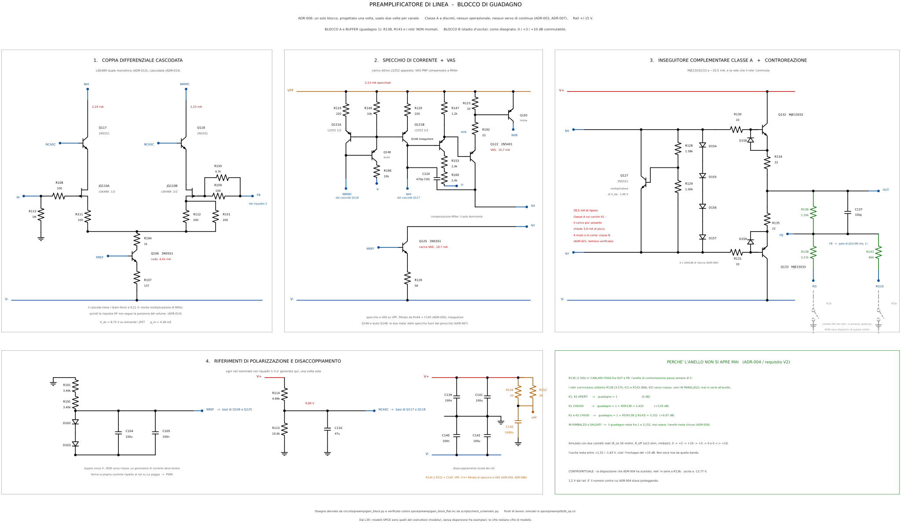
Per canale: il selettore a quattro ingressi, ciascuno col suo condensatore (sezione 3); il blocco A; le due uscite fisse coi loro buffer; il trim, poi CT, poi il volume a potenziometro col bilanciamento (sezione 9); il blocco B; il mute coi relè al jack su tutte e tre le uscite (sezione 16).
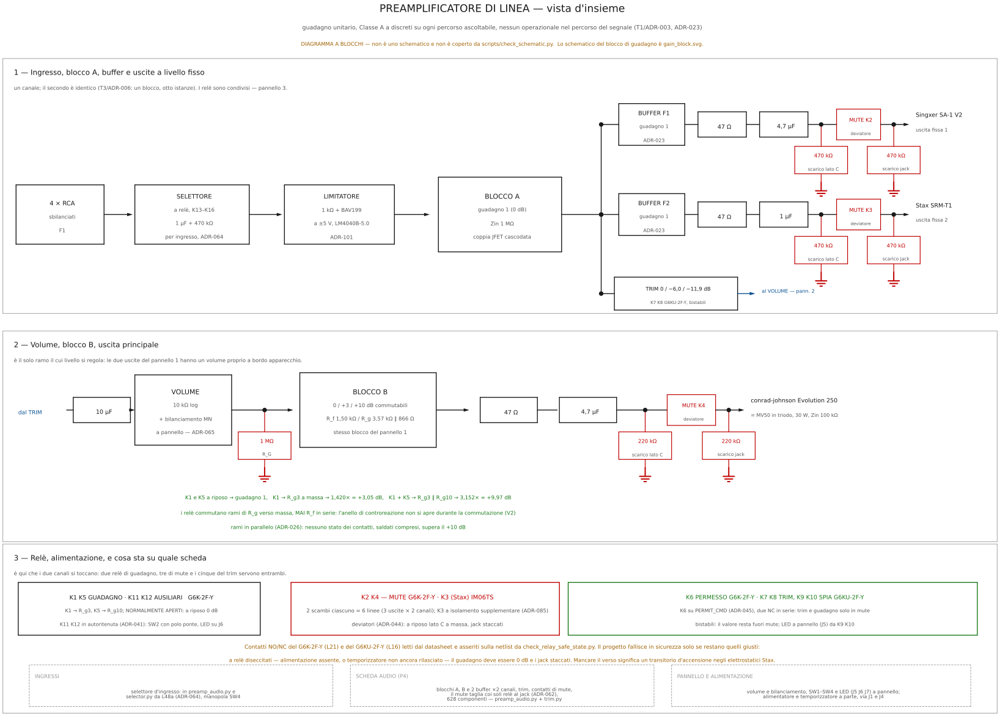
Disegno docs/preamp/schematic/audio_draw.py · 653 parti, confrontate con circuits/preamp/preamp_audio.net nei due sensi (scripts/check_schematic.py) · ridisegnato oggi dal sorgente, uguale a quello versionato · da ingrandire: docs/preamp/schematic/audio.pdf
In alto il canale sinistro, sotto il destro; i blocchi di guadagno come simbolo, il loro interno è lo schema della sezione 1. Nessuna parte del disegno manca alla netlist, e nessuna della netlist manca al disegno.
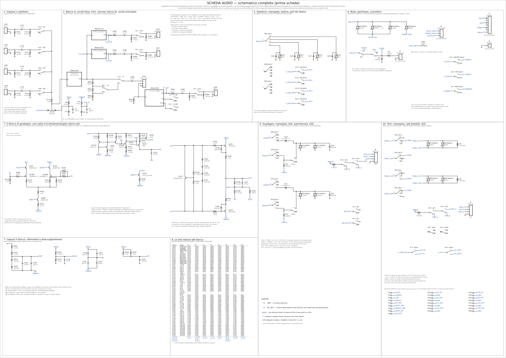
Deck spice/preamp/tb/tb_f1_selettore.cir · dati docs/preamp/data/2026-11-02/L64a/dopo/tb_f1_selettore/
Modelli del costruttore: 1N4148, DI_BAV199, LS352, LSK489, MJE15032, MJE15033, MMBT5401, MMBT5551 · segnaposto scritti a mano: nessuno · rumore 1/f: LSK489 col KF del costruttore; LS352, MJE15032, MJE15033, MMBT5401, MMBT5551 al tetto di ADR-057; KF = 0 su 1N4148, DI_BAV199
F1 (PR-14): senza musica, cambiare sorgente lascia sulle uscite al più 100 µV di picco (~33,4 dB SPL); ogni ingresso, anche non selezionato, sta a 0 V. Il selettore di ADR-064 dà a ogni ingresso un condensatore in serie, una resistenza a massa dal lato del preamp e una sul jack, e un relè monostabile dalla manopola: a ogni cambio un contatto si apre e un altro si chiude, senza mute. Il banco cambia da una sorgente a 0 V a una alla continua VB, col trasferimento del relè (il nuovo si chiude 1 ms dopo) o con la sovrapposizione (1 ms prima: l’ordine di due monostabili non è garantito).
| VB | Contatti | fissa | principale 0 dB | principale +3 dB | principale +10 dB | Esito |
|---|---|---|---|---|---|---|
| 0 V | trasferimento | 6,278 µV | 6,283 µV | 8,923 µV | 19,805 µV | regge |
| 10 mV | trasferimento | 6,278 µV | 6,284 µV | 8,924 µV | 19,806 µV | regge |
| 100 mV | trasferimento | 6,281 µV | 6,287 µV | 8,928 µV | 19,815 µV | regge |
| 1 V | trasferimento | 44,24 µV | 44,245 µV | 62,962 µV | 139,786 µV | oltre F1 |
| 100 mV | sovrapposizione | 995,161 nV | 1,105 µV | 1,57 µV | 3,483 µV | regge |
| 1 V | sovrapposizione | 23,013 µV | 23,558 µV | 31,61 µV | 70,75 µV | regge |
Fino a 100 mV di continua il gradino è quello del contatto stesso, lo stesso con due sorgenti a 0 V: al principale a +10 dB 19,805 µV (~19,4 dB SPL). Cresce con VB per la perdita del condensatore sulla resistenza dell’ingresso non scelto (il poliestere peggiore, 10 000 s): a 1 V 139,786 µV. Col gradino di fondo più la parte che cresce con la continua, il principale a +10 dB tocca F1 a ~0,67 V di continua della sorgente: è il limite che ADR-064 dichiara, arrotondato per difetto, e che i «Dettagli» di PR-14 riportano. Il controfattuale, l’ingresso di prima del selettore, con 10 mV dà 10,115 mV sul fisso e 31,564 mV sul principale: il banco distingue.
Netlist circuits/preamp/preamp_audio.net · il 2e di run_tests.sh, rieseguito da questa pagina
| Ingresso | Jack | Condensatore | R sul jack | R lato preamp | Relè (NO) |
|---|---|---|---|---|---|
| IN1_L | J101 | C171 1u | R175 | R171 | K13 |
| IN2_L | J102 | C172 1u | R176 | R172 | K14 |
| IN3_L | J103 | C173 1u | R177 | R173 | K15 |
| IN4_L | J104 | C174 1u | R178 | R174 | K16 |
| IN1_R | J301 | C371 1u | R375 | R371 | K13 |
| IN2_R | J302 | C372 1u | R376 | R372 | K14 |
| IN3_R | J303 | C373 1u | R377 | R373 | K15 |
| IN4_R | J304 | C374 1u | R378 | R374 | K16 |
Dati docs/preamp/data/2026-10-25/dopo-L57b/ · il limitatore non è cambiato dopo (ADR-101; il modello del BAV199 è del costruttore, Diodes Incorporated)
Fra il contatto del selettore e il gate del blocco A ci sono 1 kΩ in serie e una coppia di diodi BAV199 verso due riferimenti a ±5 V (ADR-101): un cavo RCA collegato a caldo, o una sorgente guasta, non porta il gate oltre quello che il JFET regge.
| Grandezza | Valore |
|---|---|
| picco sul gate, RCA collegato a caldo (reti −10 / 0 / +10 %) | 5,7 V |
| margine sul massimo gate-gate del JFET | 25,6 V |
| margine sul massimo gate-drain | 45,1 V |
| il colpo alla principale, 0 / +10 dB | 100,1 / 110,0 dB SPL |
| lo stesso col mute inserito | 77,0 / 82,7 dB SPL |
Il costo nel suono, sul blocco del giorno della prova: la THD a 20 kHz, 0,2 V, passa da 0,000686 a 0,000764 % (0,9 dB), e il rumore stimato al jack da 4,58 a 4,92 µV. Per questo il manuale chiede di collegare i cavi d’ingresso col mute inserito.
Deck spice/preamp/tb/tb_op.cir · dati docs/preamp/data/2026-11-02/L64a/dopo/tb_op/
Modelli del costruttore: 1N4148, LS352, LSK489, MJE15032, MJE15033, MMBT5401, MMBT5551 · segnaposto scritti a mano: nessuno · rumore 1/f: LSK489 col KF del costruttore; LS352, MJE15032, MJE15033, MMBT5401, MMBT5551 al tetto di ADR-057; KF = 0 su 1N4148
Corrente dai rail e punto di lavoro di ogni dispositivo attivo, a ingresso a massa. L’uscita del blocco sta a −2,888 mV (ADR-056): nel blocco A questa continua attraversa il trim, e CT la ferma prima del volume; RG tiene a massa il cursore, cioè il gate del blocco B (ADR-065).
| Grandezza | Valore |
|---|---|
| Corrente dal rail +15 V | 37,9161 mA |
| Corrente dal rail −15 V | 38,9398 mA |
| Uscita del blocco, v(OUT) | −2,888 mV |
| Dispositivo | IC / ID [mA] | VBE / VGS [V] | VBC [V] |
|---|---|---|---|
| JQ110A | 2,2557 | -0,1365 | — |
| JQ110B | 2,2474 | -0,1383 | — |
| Q106 | 4,5031 | 0,7047 | -8,227 |
| Q117 | 2,2348 | 0,6871 | -2,7024 |
| Q118 | 2,2267 | 0,687 | -2,8322 |
| Q121A | -2,2257 | 0,7035 | -0,04 |
| Q121B | -2,2261 | 0,7034 | -0,1682 |
| Q122 | -10,7151 | 0,6697 | -12,3927 |
| Q125 | 10,6042 | 0,7266 | -10,7683 |
| Q127 | 9,6047 | 0,7251 | 0,4145 |
| Q132 | 20,4504 | 0,566 | -13,9806 |
| Q133 | -20,5614 | 0,5391 | -13,9959 |
Deck spice/preamp/tb/tb_ac.cir · dati docs/preamp/data/2026-11-02/L64a/dopo/tb_ac/
Modelli del costruttore: 1N4148, LS352, LSK489, MJE15032, MJE15033, MMBT5401, MMBT5551 · segnaposto scritti a mano: nessuno · rumore 1/f: LSK489 col KF del costruttore; LS352, MJE15032, MJE15033, MMBT5401, MMBT5551 al tetto di ADR-057; KF = 0 su 1N4148
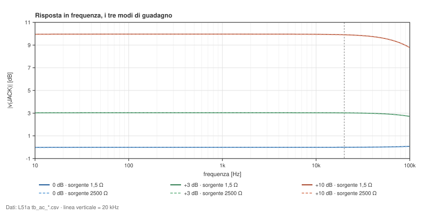
| Curva | 20 Hz | 1 kHz | 20 kHz | 100 kHz |
|---|---|---|---|---|
| 0 dB · sorgente 1,5 Ω (K11) | −0,0088 dB | −0,0062 dB | −0,0024 dB | 0,0773 dB |
| 0 dB · sorgente 2500 Ω (volume a metà) | −0,0305 dB | −0,0278 dB | −0,0240 dB | 0,0569 dB |
| +3 dB · sorgente 1,5 Ω (K11) | 3,0379 dB | 3,0405 dB | 3,0265 dB | 2,7165 dB |
| +3 dB · sorgente 2500 Ω (volume a metà) | 3,0162 dB | 3,0188 dB | 3,0049 dB | 2,6965 dB |
| +10 dB · sorgente 1,5 Ω (K11) | 9,9630 dB | 9,9655 dB | 9,9109 dB | 8,7787 dB |
| +10 dB · sorgente 2500 Ω (volume a metà) | 9,9413 dB | 9,9438 dB | 9,8894 dB | 8,7601 dB |
Il volume ha un’impedenza d’uscita che varia con la manopola. Se il cascode d’ingresso fa il suo lavoro, la forma della risposta non si muove: la risposta a 20 kHz riferita a quella a 1 kHz resta la stessa con la sorgente a 1,5 Ω e a 2500 Ω, in ogni modo.
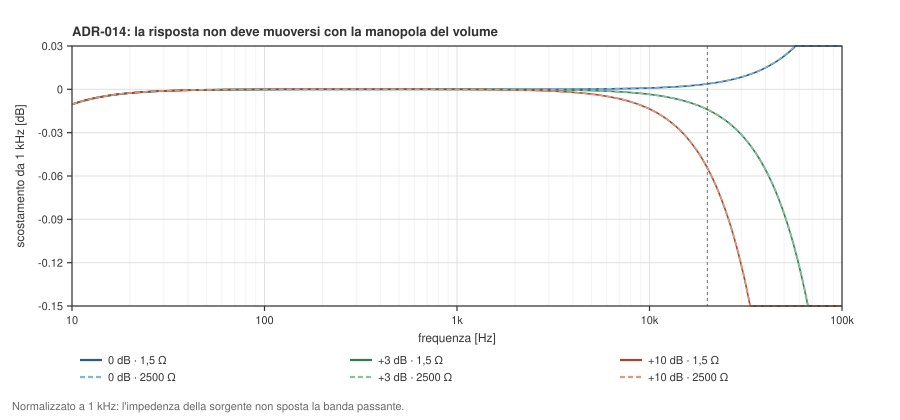
| Modo | scarto assoluto a 1 kHz | scarto assoluto a 20 kHz | 20 kHz riferito a 1 kHz — la claim |
|---|---|---|---|
| 0 dB | −0,02167 dB | −0,02162 dB | 4,97·10−5 dB |
| +3 dB | −0,02167 dB | −0,02160 dB | 7,00·10−5 dB |
| +10 dB | −0,02167 dB | −0,02152 dB | 1,55·10−4 dB |
Ogni scarto è «sorgente 2500 Ω meno sorgente 1,5 Ω». Le colonne di scarto assoluto coincidono a 1 kHz e a 20 kHz perché sono una perdita di livello a banda larga, il partitore fra la sorgente e la Zin del blocco: non misurano la claim. La claim è l’ultima colonna.
Con il carico Stax-like da 50 kΩ: −0,0140 dB a 1 kHz, −0,0214 dB a 20 Hz, −0,1321 dB a 5 Hz. Il polo è quello del condensatore d’uscita da 4,7 µF (E8, ADR-007).
Deck spice/preamp/tb/tb_loop.cir · dati docs/preamp/data/2026-11-02/L64a/dopo/tb_loop/ (blocco B)
Modelli del costruttore: 1N4148, LS352, LSK489, MJE15032, MJE15033, MMBT5401, MMBT5551 · segnaposto scritti a mano: nessuno · rumore 1/f: LSK489 col KF del costruttore; LS352, MJE15032, MJE15033, MMBT5401, MMBT5551 al tetto di ADR-057; KF = 0 su 1N4148
Deck spice/preamp/tb/tb_loop_blockA.cir · dati docs/preamp/data/2026-11-02/L64a/dopo/tb_loop_blockA/ (blocco A)
Modelli del costruttore: 1N4148, DI_BAV199, LS352, LSK489, MJE15032, MJE15033, MMBT5401, MMBT5551 · segnaposto scritti a mano: nessuno · rumore 1/f: LSK489 col KF del costruttore; LS352, MJE15032, MJE15033, MMBT5401, MMBT5551 al tetto di ADR-057; KF = 0 su 1N4148, DI_BAV199
Deck spice/preamp/tb/tb_loop_bufferfissa.cir · dati docs/preamp/data/2026-11-02/L64a/dopo/tb_loop_bufferfissa/ (buffer delle fisse)
Modelli del costruttore: 1N4148, LS352, LSK489, MJE15032, MJE15033, MMBT5401, MMBT5551 · segnaposto scritti a mano: nessuno · rumore 1/f: LSK489 col KF del costruttore; LS352, MJE15032, MJE15033, MMBT5401, MMBT5551 al tetto di ADR-057; KF = 0 su 1N4148
Soglia: 60° su ogni combinazione della matrice (ADR-019). Dove si applica la sonda lo dice ADR-024: la sonda capacitiva è il cavo d’interconnessione e sta al jack, dopo i 47 Ω e il 4,7 µF, sul blocco B e sui buffer delle fisse; il verdetto è il minimo sulla spazzata fino a 4,7 nF, non il valore a 4,7 nF. Il blocco A pilota il cablaggio interno fino al volume e si giudica con una capacità realistica, ≤ 1 nF. La sonda sul nodo d’uscita resta come informazione.
Iniezione di tensione al gate del JFET invertente: quel nodo non assorbe corrente e la rete di controreazione lo pilota a bassa impedenza, quindi l’iniezione semplice è esatta. I relè commutano la rete di controreazione, quindi il margine è diverso nei tre modi, e l’impedenza del volume cambia con la manopola: per questo si spazza tutto.
| Istanza | Dove cade il minimo | Minimo della spazzata | A 4,7 nF | Sonda sul nodo | Esito |
|---|---|---|---|---|---|
| Blocco B · 0 dB | sorgente 2,611 kΩ · carico 100 kΩ · cavo 3,3 nF | 64,869° | 64,945° | 47,511° | conforme |
| Blocco B · +3 dB | sorgente 2,611 kΩ · carico 100 kΩ · cavo 3,3 nF | 73,024° | 73,384° | 54,764° | conforme |
| Blocco B · +10 dB | sorgente 2,611 kΩ · carico 100 kΩ · cavo 4,7 nF | 104,953° | 104,953° | 99,779° | conforme |
| Blocco A · trim 0 dB | sorgente 430 Ω · cablaggio 1 nF | 67,801° | — | — | conforme |
| Blocco A · trim −6 dB | sorgente 430 Ω · cablaggio 470 pF | 72,932° | — | — | conforme |
| Blocco A · trim −12 dB | sorgente 430 Ω · cablaggio 470 pF | 73,123° | — | — | conforme |
| Buffer delle fisse | carico 50 kΩ · cavo 3,3 nF | 65,005° | — | 43,654° | conforme |
| Blocco B · sorgente del bilanciamento | sorgente 5,6 kΩ · 0 dB · carico 100 kΩ · cavo 3,3 nF | 64,110° | — | — | conforme |
Blocco B: 110 righe per modo al jack, sorgenti del volume da 1 mΩ a (10 kΩ + Thévenin del trim)/4, carichi 100 kΩ e 10 kΩ; la compensazione è quella di ADR-054. Col bilanciamento il blocco B vede sorgenti più alte: l’ultima riga è il minimo fino a 5,6 kΩ (sezione 9). Blocco A: scala 845 / 464 / 464 Ω; senza trim il minimo è 67,760° (sorgente 430 Ω, 1 nF). Con 4,7 nF sul cablaggio, che ADR-024 non chiede, il blocco A a trim 0 dB scende a 44,06°.
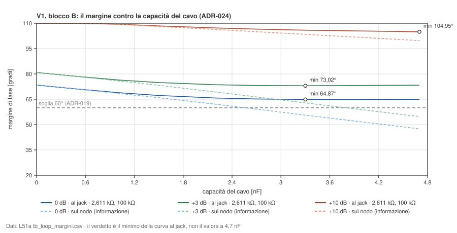
Il verdetto è il minimo della curva al jack, non il valore a 4,7 nF: a 0 dB il minimo, 64,87°, cade a 3,3 nF, e a 4,7 nF la stessa curva vale 64,94°. Sul nodo, dove nessun cavo vero sta, lo stesso blocco scende a 47,51°.
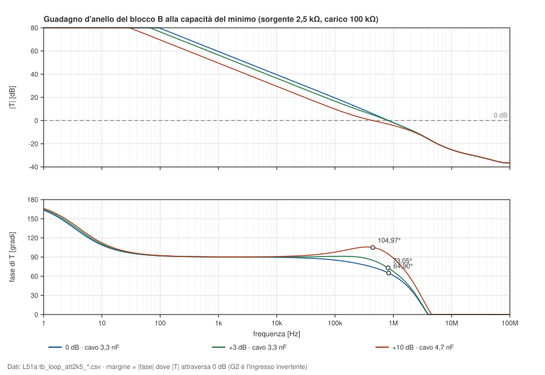
| Blocco B, sorgente 2,5 kΩ, carico 100 kΩ | |T| a 10 Hz | frequenza d’incrocio | margine |
|---|---|---|---|
| 0 dB · cavo 3,3 nF | 99,11 dB | 830,856 kHz | 64,898° |
| +3 dB · cavo 3,3 nF | 95,96 dB | 811,948 kHz | 73,052° |
| +10 dB · cavo 4,7 nF | 88,89 dB | 445,37 kHz | 104,969° |
Deck spice/preamp/tb/tb_trim.cir · dati docs/preamp/data/2026-11-02/L64a/dopo/tb_trim/
Modelli del costruttore: 1N4148, DI_BAV199, LS352, LSK489, MJE15032, MJE15033, MMBT5401, MMBT5551 · segnaposto scritti a mano: nessuno · rumore 1/f: LSK489 col KF del costruttore; LS352, MJE15032, MJE15033, MMBT5401, MMBT5551 al tetto di ADR-057; KF = 0 su 1N4148, DI_BAV199
Il trim è uno solo, fra l’uscita del blocco A e il volume (ADR-027): le uscite fisse prendono il segnale prima di lui e restano copia fedele della sorgente. Scala per canale 845 / 464 / 464 Ω, a relè bistabili. L’attenuazione è misurata col carico che ha davanti: CT, il volume e il bilanciamento al centro (ADR-065).
| Posizione | Attenuazione a 1 kHz |
|---|---|
| 0 dB | −0,0001 dB |
| −6 dB | −6,0762 dB |
| −12 dB | −11,9968 dB |
E3 chiede ≥ 100 kΩ al connettore d’ingresso in ogni posizione del trim, sul minimo di |Zin| fra 20 Hz e 20 kHz («Nota su E3»). Il connettore vede la rete dell’ingresso (ADR-064) e il blocco A; la capacità del selettore e del cablaggio è spazzata.
| Posizione del trim | selettore 1 fF | selettore 22 pF | selettore 68 pF | Esito |
|---|---|---|---|---|
| senza trim (riferimento) | 307,875 kΩ | 221,67 kΩ | 105,275 kΩ | — |
| 0 dB | 307,877 kΩ | 221,67 kΩ | 105,275 kΩ | conforme |
| −6 dB | 307,877 kΩ | 221,67 kΩ | 105,275 kΩ | conforme |
| −12 dB | 307,877 kΩ | 221,67 kΩ | 105,275 kΩ | conforme |
Deck spice/preamp/tb/tb_e3_e5.cir · dati docs/preamp/data/2026-11-02/L64a/dopo/tb_e3_e5/
Modelli del costruttore: 1N4148, DI_BAV199, LS352, LSK489, MJE15032, MJE15033, MMBT5401, MMBT5551 · segnaposto scritti a mano: nessuno · rumore 1/f: LSK489 col KF del costruttore; LS352, MJE15032, MJE15033, MMBT5401, MMBT5551 al tetto di ADR-057; KF = 0 su 1N4148, DI_BAV199
Lo stesso ingresso, letto al jack, nel deck che porta E3 ed E5 dalla rete di ADR-064 alla catena col volume:
| Posizione del trim | selettore 1 fF | selettore 22 pF | selettore 68 pF | Esito |
|---|---|---|---|---|
| 0 dB | 307,877 kΩ | 221,67 kΩ | 105,275 kΩ | conforme |
| −6 dB | 307,877 kΩ | 221,67 kΩ | 105,275 kΩ | conforme |
| −12 dB | 307,877 kΩ | 221,67 kΩ | 105,275 kΩ | conforme |
Deck docs/preamp/data/2026-11-02/L64a/bilanciamento/tb_e5_bilanciamento.cir · dati docs/preamp/data/2026-11-02/L64a/dopo/bilanciamento/tb_e5_bilanciamento/ · copia del deck col bilanciamento girato di 3 dB (L48b), ricorsa oggi
Modelli del costruttore: 1N4148, DI_BAV199, LS352, LSK489, MJE15032, MJE15033, MMBT5401, MMBT5551 · segnaposto scritti a mano: nessuno · rumore 1/f: LSK489 col KF del costruttore; LS352, MJE15032, MJE15033, MMBT5401, MMBT5551 al tetto di ADR-057; KF = 0 su 1N4148, DI_BAV199
Deck docs/preamp/data/2026-11-02/L64a/bilanciamento/tb_loop_bilanciamento.cir · dati docs/preamp/data/2026-11-02/L64a/dopo/bilanciamento/tb_loop_bilanciamento/ · copia di tb_loop.cir con le sorgenti del bilanciamento (L48b), ricorsa oggi
Modelli del costruttore: 1N4148, LS352, LSK489, MJE15032, MJE15033, MMBT5401, MMBT5551 · segnaposto scritti a mano: nessuno · rumore 1/f: LSK489 col KF del costruttore; LS352, MJE15032, MJE15033, MMBT5401, MMBT5551 al tetto di ADR-057; KF = 0 su 1N4148
Il volume è un potenziometro, non più un attenuatore a scatti, con un bilanciamento davanti (ADR-065, PR-16): fra il trim e il volume c’è CT, che ferma la continua del blocco A (NC-041), e RG tiene a massa il cursore, il gate del blocco B. Senza CT la continua del blocco A attraversava trim e volume, e ogni movimento del cursore la portava al jack come un gradino.
Banco docs/preamp/data/2026-11-02/L64a/scatti/genera_scatti.py · dati docs/preamp/data/2026-11-02/L64a/scatti/ · analizza.py rieseguito da questa pagina, uguale byte per byte
Il banco di L48b muove il cursore del volume a passi di 2 dB, in cima alla corsa e verso il fondo, e legge il gradino al jack: col cursore che chiude il punto nuovo prima di aprire il vecchio, e con quello che resta aperto 1 ms fra i due.
| Evento | al jack, il peggiore | di picco a 1 m |
|---|---|---|
| un passo del cursore, il circuito di prima (senza CT) | 19,53 mV | 79,3 dB SPL |
| un passo del cursore, oggi, contatto che chiude prima di aprire | 19,33 nV | sotto 0 dB SPL |
| un passo del cursore, oggi, contatto aperto per 1 ms | 48,36 nV | sotto 0 dB SPL |
| il cambio del trim fuori mute, oggi (limite per eccesso) | 42,76 mV | 86,1 dB SPL |
«Il peggiore» è il peggiore delle continue del blocco A del banco, la nominale e i ±30 mV della dispersione dei pezzi, sui tre guadagni e sui due eventi del volume. Il cambio del trim fuori mute è un limite per eccesso: il trim si cambia solo a mute inserito (ADR-027), e il caso vero è il gruppo 2 della matrice di V2 (sezione 16).
| Sorgente del blocco B | Dove cade il minimo | V1, minimo | Esito |
|---|---|---|---|
| 2,611 kΩ | 0 dB · carico 100 kΩ · cavo 3,3 nF · 66 celle | 64,869° | conforme |
| 3,77 kΩ | 0 dB · carico 100 kΩ · cavo 3,3 nF · 66 celle | 64,573° | conforme |
| 5,07 kΩ | 0 dB · carico 100 kΩ · cavo 3,3 nF · 66 celle | 64,243° | conforme |
| 5,6 kΩ | 0 dB · carico 100 kΩ · cavo 3,3 nF · 66 celle | 64,110° | conforme |
E5 col bilanciamento al centro 5,413 µV, girato di 3 dB 5,425 µV, contro 10 µV.
| Canale | Dal trim | CT | Al volume | Cursore | RG |
|---|---|---|---|---|---|
| VOL_L | L_TRIM_OUT | C265 10u | J120 | L_ATT_W | R265 |
| VOL_R | R_TRIM_OUT | C465 10u | J320 | BR_IN | R465 |
Deck spice/preamp/tb/tb_zout_psrr_noise.cir · dati docs/preamp/data/2026-11-02/L64a/dopo/tb_zout_psrr_noise/
Modelli del costruttore: 1N4148, LS352, LSK489, MJE15032, MJE15033, MMBT5401, MMBT5551 · segnaposto scritti a mano: nessuno · rumore 1/f: LSK489 col KF del costruttore; LS352, MJE15032, MJE15033, MMBT5401, MMBT5551 al tetto di ADR-057; KF = 0 su 1N4148
Deck spice/preamp/tb/tb_noise_breakdown.cir · dati docs/preamp/data/2026-11-02/L64a/dopo/tb_noise_breakdown/
Modelli del costruttore: 1N4148, LS352, LSK489, MJE15032, MJE15033, MMBT5401, MMBT5551 · segnaposto scritti a mano: nessuno · rumore 1/f: LSK489 col KF del costruttore; LS352, MJE15032, MJE15033, MMBT5401, MMBT5551 al tetto di ADR-057; KF = 0 su 1N4148
E5 chiede meno di 10 µV RMS in uscita fra 20 Hz e 20 kHz, non pesati, e di questi 1 µV è la quota dell’alimentazione (ADR-020). Il rumore 1/f dei bipolari è al tetto di ADR-057, il doppio del tipico delle curve pubblicate: queste cifre sono un limite per eccesso. Ogni totale è ricontrollato integrando lo spettro versionato.
| Blocco da solo, uscita al jack | Rumore 20 Hz–20 kHz |
|---|---|
| A) 0 dB, sorgente 1 Ω — blocco A intrinseco | 1,195 µV |
| B) 0 dB, sorgente 430 Ω — blocco A sul phono | 1,253 µV |
| C) 0 dB, sorgente 2500 Ω — blocco B | 1,501 µV |
| E) +3 dB, sorgente 2500 Ω — blocco B | 2,056 µV |
| D) +10 dB, sorgente 2500 Ω — blocco B, caso peggiore | 4,337 µV |
| 0 dB · sorgente 430 Ω (phono) | 1,253 µV |
| +3 dB · sorgente 430 Ω | 1,689 µV |
| +10 dB · sorgente 430 Ω | 3,472 µV |
La catena col trim: blocco A, trim, CT, volume, blocco B, sorgente phono (430 Ω) o K11 (1,5 Ω), volume al massimo o a metà corsa, tre modi. Per ogni posizione del trim la cella peggiore:
| Trim | Cella peggiore | Rumore | Esito contro 10 µV |
|---|---|---|---|
| senza trim (riferimento) | +10 dB · volume al massimo · sorgente 430 Ω | 5,413 µV | — |
| 0 dB | +10 dB · volume al massimo · sorgente 430 Ω | 5,413 µV | sotto soglia |
| −6 dB | +10 dB · volume a metà · sorgente 430 Ω | 4,505 µV | sotto soglia |
| −12 dB | +10 dB · volume a metà · sorgente 430 Ω | 4,401 µV | sotto soglia |
Col deck canonico di E3 ed E5 il peggiore è 5,413 µV (+10 dB, sorgente 430 Ω); col bilanciamento girato di 3 dB 5,425 µV (sezione 9).
Deck spice/preamp/tb/tb_dc_headroom.cir · dati docs/preamp/data/2026-11-02/L64a/dopo/tb_dc_headroom/
Modelli del costruttore: 1N4148, LS352, LSK489, MJE15032, MJE15033, MMBT5401, MMBT5551 · segnaposto scritti a mano: nessuno · rumore 1/f: LSK489 col KF del costruttore; LS352, MJE15032, MJE15033, MMBT5401, MMBT5551 al tetto di ADR-057; KF = 0 su 1N4148
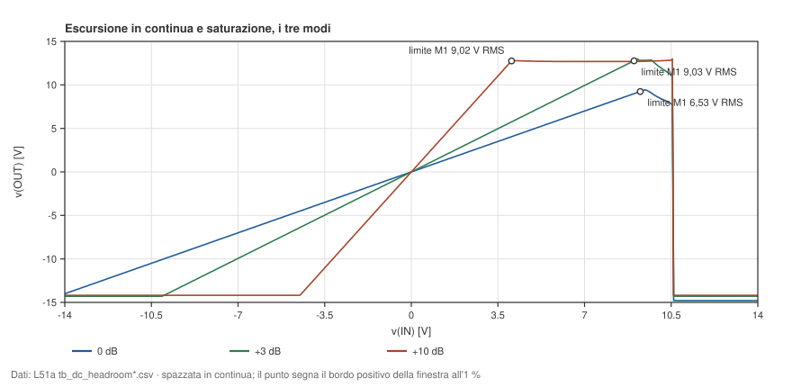
| Modo | Guadagno a 0 V | Finestra all’1 % in ingresso | v(OUT) ai bordi | Limite lineare | Saturazione |
|---|---|---|---|---|---|
| 0 dB | 1,00000 × | −13,95 … 9,25 V | −13,952 … 9,240 V | 6,5334 V RMS | 6,6708 V RMS |
| +3 dB | 1,42015 × | −10,00 … 9,00 V | −14,204 … 12,769 V | 9,0294 V RMS | 9,1776 V RMS |
| +10 dB | 3,15200 × | −4,45 … 4,05 V | −14,032 … 12,756 V | 9,0202 V RMS | 9,1888 V RMS |
I modi non saturano allo stesso livello, e la differenza non sta nello stadio d’uscita: a guadagno unitario v(FB) insegue v(OUT), il modo comune della coppia d’ingresso sale con l’uscita e si ferma per primo; con più guadagno v(FB) è una frazione di v(OUT) e l’uscita arriva più in alto. È una proprietà della topologia; i valori esatti dipendono dai modelli.
Il caso che preoccupa è E6 × E2: il FiiO K11 a fondo scala dà 2,7 V RMS, e con rail a ±15 V (ADR-015) il +10 dB non ha quasi margine senza trim. La cifra pubblicata usa una metrica, M1, scelta in L16:
| Modo | trim 0 dB | trim −6 dB | trim −12 dB |
|---|---|---|---|
| M1 · 0 dB | +7,68 dB | +13,75 dB | +19,67 dB |
| M1 · +3 dB | +7,44 dB | +13,52 dB | +19,44 dB |
| M1 · +10 dB | +0,51 dB | +6,58 dB | +12,50 dB |
La cifra per NC-009 è +6,58 dB: +10 dB, trim a −6 dB, metrica M1. Il caso raggiungibile per errore, +10 dB col trim a 0 dB, lascia +0,51 dB; il LED del trim (ADR-027) lo rende visibile.
Le altre due cifre che circolavano misurano cose diverse, e restano solo etichettate:
| +10 dB | trim 0 dB | trim −6 dB | trim −12 dB |
|---|---|---|---|
| M1 — 1 % contro il richiesto misurato — la cifra | +0,51 dB | +6,58 dB | +12,50 dB |
| M2 — saturazione contro il richiesto nominale (ADR-015) | +0,64 dB | +6,64 dB | +12,64 dB |
| M3 — 1 % contro il richiesto nominale (dossier fino a L32) | +0,48 dB | +6,48 dB | +12,48 dB |
Deck spice/preamp/tb/tb_zout_psrr_noise.cir · dati docs/preamp/data/2026-11-02/L64a/dopo/tb_zout_psrr_noise/
Modelli del costruttore: 1N4148, LS352, LSK489, MJE15032, MJE15033, MMBT5401, MMBT5551 · segnaposto scritti a mano: nessuno · rumore 1/f: LSK489 col KF del costruttore; LS352, MJE15032, MJE15033, MMBT5401, MMBT5551 al tetto di ADR-057; KF = 0 su 1N4148
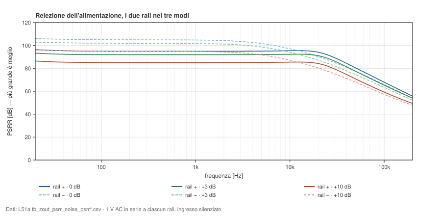
| Rail e modo | 100 Hz | 1 kHz | 10 kHz | 100 kHz |
|---|---|---|---|---|
| rail + · 0 dB | 95,04 dB | 94,97 dB | 95,42 dB | 67,98 dB |
| rail + · +3 dB | 91,99 dB | 91,92 dB | 92,38 dB | 65,34 dB |
| rail + · +10 dB | 85,06 dB | 84,99 dB | 85,46 dB | 59,28 dB |
| rail − · 0 dB | 105,06 dB | 104,78 dB | 97,17 dB | 66,03 dB |
| rail − · +3 dB | 102,02 dB | 101,74 dB | 94,12 dB | 63,39 dB |
| rail − · +10 dB | 95,10 dB | 94,82 dB | 87,20 dB | 57,32 dB |
Il lato debole è il rail positivo a +10 dB: 85,46 dB a 10 kHz. Sul rail positivo la cella RC per blocco (ADR-056) filtra specchio e VAS. La quota di ripple che l’alimentatore può lasciare si ricava da queste curve («Nota su E5 — la quota del ripple», ADR-020).
Deck spice/preamp/tb/tb_e4_uscite.cir · dati docs/preamp/data/2026-11-02/L64a/dopo/tb_e4_uscite/
Modelli del costruttore: 1N4148, LS352, LSK489, MJE15032, MJE15033, MMBT5401, MMBT5551 · segnaposto scritti a mano: nessuno · rumore 1/f: LSK489 col KF del costruttore; LS352, MJE15032, MJE15033, MMBT5401, MMBT5551 al tetto di ADR-057; KF = 0 su 1N4148
E4 chiede un’impedenza d’uscita < 100 Ω in banda passante, misurata escludendo la reattanza del condensatore d’accoppiamento, e costante con la posizione del volume. Il deck porta la catena intera in subckt: blocco A, buffer delle fisse, trim, volume, blocco B. Inietta 1 A AC in un jack per volta, a sorgente spenta, in ogni cella di trim × volume × modo. «Escludendo la reattanza» si legge come Re(Z) al jack: il condensatore in serie è reattanza pura, e nella parte reale resta lo scarico in parallelo, che pesa a 20 Hz.
| Uscita | Celle | Re(Z) max, 20 Hz–20 kHz | Re(Z) 1 kHz | |Z| 1 kHz | nodo, 1 kHz | dispersione su trim × volume | Esito |
|---|---|---|---|---|---|---|---|
| principale · 0 dB | 15 | 60,0159 Ω | 46,9968 Ω | 57,9173 Ω | 0,0131 Ω | 0 Ω | conforme |
| principale · +3 dB | 15 | 60,0166 Ω | 46,9976 Ω | 57,9147 Ω | 0,0185 Ω | 0 Ω | conforme |
| principale · +10 dB | 15 | 60,0195 Ω | 47,0006 Ω | 57,9041 Ω | 0,0411 Ω | 0 Ω | conforme |
| fissa 1 · tre modi | 45 | 53,0973 Ω | 46,9994 Ω | 57,9239 Ω | 0,0131 Ω | 0 Ω | conforme |
| fissa 2 · tre modi | 45 | 53,0973 Ω | 46,9994 Ω | 57,9239 Ω | 0,0131 Ω | 0 Ω | conforme |
Deck spice/preamp/tb/tb_zout_psrr_noise.cir · dati docs/preamp/data/2026-11-02/L64a/dopo/tb_zout_psrr_noise/
Modelli del costruttore: 1N4148, LS352, LSK489, MJE15032, MJE15033, MMBT5401, MMBT5551 · segnaposto scritti a mano: nessuno · rumore 1/f: LSK489 col KF del costruttore; LS352, MJE15032, MJE15033, MMBT5401, MMBT5551 al tetto di ADR-057; KF = 0 su 1N4148
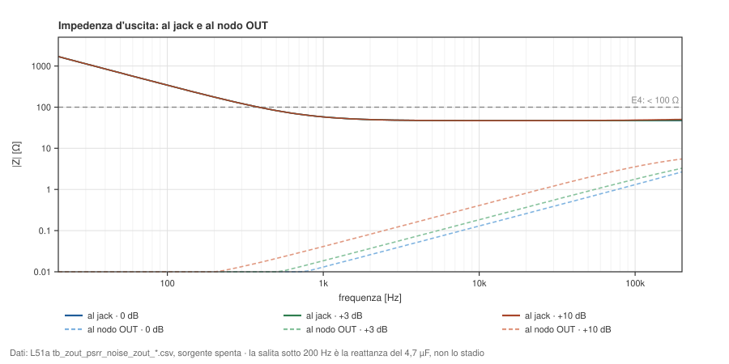
| Punto di misura | 20 Hz | 1 kHz | 20 kHz | 100 kHz |
|---|---|---|---|---|
| al jack · 0 dB | 1693 Ω | 57,9173 Ω | 47,0133 Ω | 47,0018 Ω |
| al jack · +3 dB | 1693 Ω | 57,9147 Ω | 47,0221 Ω | 47,2621 Ω |
| al jack · +10 dB | 1693 Ω | 57,9041 Ω | 47,0784 Ω | 48,5148 Ω |
| al nodo OUT · 0 dB | 0,001687 Ω | 0,0131 Ω | 0,2591 Ω | 1,3096 Ω |
| al nodo OUT · +3 dB | 0,002396 Ω | 0,0185 Ω | 0,3672 Ω | 1,7743 Ω |
| al nodo OUT · +10 dB | 0,005318 Ω | 0,0411 Ω | 0,8112 Ω | 3,565 Ω |
Deck docs/preamp/data/2026-11-02/L64a/distorsione/deck/oggi/thd_20k.cir · dati docs/preamp/data/2026-11-02/L64a/distorsione/run/oggi/ · il banco di L46a e L46b, sul blocco di oggi
Modelli del costruttore: 1N4148, LS352, LSK489, MJE15032, MJE15033, MMBT5401, MMBT5551 · segnaposto scritti a mano: nessuno · rumore 1/f: LSK489 col KF del costruttore; LS352, MJE15032, MJE15033, MMBT5401, MMBT5551 al tetto di ADR-057; KF = 0 su 1N4148
V4 chiede che la distorsione non abbia niente di aspro, con tetti in numeri (ADR-055). Il banco è quello con cui L46a e L46b hanno scelto la compensazione: il blocco di guadagno da solo nei tre modi, sorgente 2,5 kΩ, carico 47 Ω + 4,7 µF + 10 kΩ, a due livelli d’uscita: 0,2 V RMS, il livello musicale scelto dall’utente (−20 dB), e 2 V RMS, la prova di stress. È stato corso di nuovo il 2026-11-02 sul blocco che il sorgente genera oggi, a 27 °C uniformi; le cifre a caldo e quelle sulla catena sono sotto.
| Clausola | Tetto | Il blocco di oggi, il peggiore sui tre modi | Esito |
|---|---|---|---|
| la distorsione non cresce verso gli acuti: THD a 20 kHz, 0,2 V | ≤ 0,001 % | 0,000447 % | conforme |
| le armoniche dalla 5ª in su, 0,2 V, 1 / 10 / 20 kHz | ≤ −140 dB | −206,4 dB | conforme |
| l’intermodulazione, 19 + 20 kHz, il prodotto a 1 kHz, 0,2 V | ≤ −110 dB | −132,3 dB | conforme |
| prova di stress: THD a 20 kHz, 2 V | ≤ 0,01 % | 0,00449 % | conforme |
| Modo | THD 1 kHz | THD 10 kHz | THD 20 kHz | intermodulazione | THD 20 kHz a 2 V |
|---|---|---|---|---|---|
| 0 dB | 0,0000221 % | 0,000222 % | 0,000447 % | −138,3 dB | 0,00449 % |
| +3 dB | 0,0000220 % | 0,000220 % | 0,000439 % | −138,4 dB | 0,00440 % |
| +10 dB | 0,0000198 % | 0,000197 % | 0,000387 % | −132,3 dB | 0,00387 % |
Dati docs/preamp/data/2026-11-02/L66/sintesi_caldo.csv (L66, la variante che ADR-111 ha portato nel sorgente)
Lo stesso banco col blocco a caldo: ogni dispositivo alla temperatura che raggiunge col proprio calore, a 27 °C e a 57 °C d’aria, col rame del layout o col rame minimo. Il tetto della THD a 20 kHz è quello di V4 al livello del caso.
| Aria, rame | Fuori | Margine minimo | THD 20 kHz, 0,2 V | THD 20 kHz, 2 V | Intermodulazione |
|---|---|---|---|---|---|
| 27 °C, rame del layout | 0 su 12 | 3,0 dB | 0,000695 % | 0,00705 % | −132,4 dB |
| 27 °C, rame minimo | 0 su 12 | 3,0 dB | 0,000695 % | 0,00705 % | −132,4 dB |
| 57 °C, rame del layout | 0 su 12 | 2,7 dB | 0,000725 % | 0,00734 % | −131,0 dB |
| 57 °C, rame minimo | 0 su 12 | 2,7 dB | 0,000725 % | 0,00734 % | −131,0 dB |
Dati docs/preamp/data/2026-11-02/L67/ (L67, ADR-112)
Il blocco da solo non dice tutto: sulla catena di un canale il blocco prima del volume lavora al livello della sorgente, che può essere più alto di quello all’uscita. Per decisione dell’utente (ADR-112, «Ogni blocco al suo livello») la THD a 20 kHz si giudica al livello a cui ogni blocco lavora: il tetto scala da 0,001 % a 0,2 V a 0,01 % a 2 V, e alla principale vale il livello più alto lungo il percorso.
| Il blocco, la temperatura | Casi | Fuori, ogni blocco al suo livello | Margine minimo | Fuori, V4 letto alla lettera |
|---|---|---|---|---|
| il blocco di oggi, 27 °C | 42 | 0 | 1,9 dB | 11 |
| a caldo, 27 °C, rame del layout | 42 | 0 | 1,9 dB | 11 |
| a caldo, 27 °C, rame minimo | 42 | 0 | 1,9 dB | 11 |
| a caldo, 57 °C, rame del layout | 42 | 0 | 1,3 dB | 13 |
| a caldo, 57 °C, rame minimo | 42 | 0 | 1,3 dB | 13 |
| il blocco di L56 | 42 | 0 | 1,9 dB | 11 |
L’intermodulazione sulla catena: 0 casi su 78 oltre il tetto di −110 dB, margine minimo 10,8 dB.
Deck spice/preamp/tb/tb_switch_v2.cir · dati docs/preamp/data/2026-11-02/L64a/dopo/tb_switch_v2/
Modelli del costruttore: 1N4148, LS352, LSK489, MJE15032, MJE15033, MMBT5401, MMBT5551 · segnaposto scritti a mano: nessuno · rumore 1/f: LSK489 col KF del costruttore; LS352, MJE15032, MJE15033, MMBT5401, MMBT5551 al tetto di ADR-057; KF = 0 su 1N4148
V2: l’anello non si apre mai commutando. Il deck modella K1 e K5 come contatti veri, con rimbalzi in chiusura e in apertura, e percorre ogni passaggio fra 0, +3 e +10 dB, compresi i due ordini in cui una coppia di relè può arrivare sul salto diretto. La previsione falsificabile: v(OUT) resta nell’inviluppo del regime a +10 dB in ogni istante.
| Finestra | v(OUT) max | v(OUT) min | Dentro l’inviluppo del +10 dB |
|---|---|---|---|
| regime a 0 dB | 0,4969 V | −0,5027 V | sì |
| regime a +3 dB | 0,7057 V | −0,7139 V | sì |
| regime a +10 dB | 1,5662 V | −1,5844 V | sì |
| regime a +10 dB, seconda volta | 1,5662 V | −1,5844 V | sì |
| 0 → +3 dB (K1) | 0,7057 V | −0,7139 V | sì |
| +3 → +10 dB (K5) | 1,5662 V | −1,5844 V | sì |
| +10 → +3 dB (K5) | 1,5662 V | −0,7139 V | sì |
| +3 → 0 dB (K1) | 0,7057 V | −0,5027 V | sì |
| 0 → +10 dB, K5 per primo | 1,5662 V | −1,5845 V | sì |
| +10 → 0 dB, K1 per primo | 1,5662 V | −1,3237 V | sì |
Inviluppo del regime a +10 dB: +1,5662 / −1,5844 V. Estremi sull’intera corsa di 70 ms, rimbalzi compresi: +1,5662 / −1,5845 V. La forma d’onda non è versionata; le finestre sono confrontate con le meas del log.
Deck spice/preamp/tb/tb_switch_v2_counterfactual.cir · dati docs/preamp/data/2026-11-02/L64a/dopo/tb_switch_v2_counterfactual/
Modelli del costruttore: 1N4148, LS352, LSK489, MJE15032, MJE15033, MMBT5401, MMBT5551 · segnaposto scritti a mano: nessuno · rumore 1/f: LSK489 col KF del costruttore; LS352, MJE15032, MJE15033, MMBT5401, MMBT5551 al tetto di ADR-057; KF = 0 su 1N4148
ADR-004 ha scartato il contatto in serie a Rf. Una decisione porta informazione solo se la disposizione scartata è mostrata fallire: con Rf aperto non esiste più controreazione, e l’uscita va a −14,8710 V, dove lo stadio non amplifica più niente.
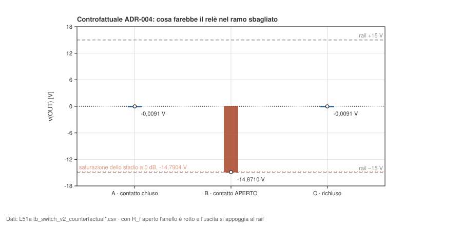
| Stato | Configurazione | v(OUT) | v(FB) |
|---|---|---|---|
| A | contatto CHIUSO, R_f = 1,50 kΩ | −0,009103 V | −0,002888 V |
| B | contatto APERTO, R_f = 1e12 Ω | −14,870992 V | −0,000000 V |
| C | richiuso, controprova di B | −0,009103 V | −0,002888 V |
C esiste per escludere che B sia un artefatto del solutore: A e C coincidono. La disposizione scelta commuta Rg verso massa, e i due rami di ADR-026 stanno in parallelo: a contatti aperti il guadagno è 1 e l’anello non si apre mai.
Deck spice/preamp/tb/tb_v2_casopeggiore.cir · dati docs/preamp/data/2026-11-02/L64a/v2/ · la matrice intera, 155 corse, ricorsa il 2026-11-02
Modelli del costruttore: 1N4148, LS352, LSK489, MJE15032, MJE15033, MMBT5401, MMBT5551 · segnaposto scritti a mano: nessuno · rumore 1/f: LSK489 col KF del costruttore; LS352, MJE15032, MJE15033, MMBT5401, MMBT5551 al tetto di ADR-057; KF = 0 su 1N4148
Il mute taglia coi soli relè al jack (ADR-062, PR-21): con la musica il silenzio arriva di colpo, e al rilascio la musica torna di colpo al livello di prima. Un relè per uscita, geometria iii (ADR-044): comune sul lato del condensatore, NO sul jack, NC a massa, uno scarico su entrambi i lati. Guadagno, trim e volume si cambiano col jack staccato (sezione 17).
V2 si giudica (ADR-032, ADR-063) con A, il gradino senza musica all’inserzione e al rilascio, e B2, il residuo al jack a mute inserito senza musica; con la musica, il residuo è la musica che passa davvero: B2g, il jack grezzo nella finestra del mute, e B1, il riferimento sempre in mute. Soglia 100 µV di picco per tutte (~33,4 dB SPL). Il clic del taglio non ha soglia: si misura e si dichiara (ADR-062).
| Gruppo | Verdetti | A, peggiore | B2, peggiore | B2g, peggiore | B1, peggiore | Esito |
|---|---|---|---|---|---|---|
| 1 · cambio di guadagno | 78 | 4,651 nV gm0x10_lz_iii_c · mainjack | 0,077 nV gm10x3_lz_iii_i · mainjack | 8,918 µV gm0x3_20_iii_i · fixjack2 | 1,192 µV gm0x3_1k_iii_i · fixjack2 | regge |
| 2 · cambio di trim | 54 | 4,973 nV tm12x0_lz_iii_c · mainjack | 0,000148 nV tm0x6_lz_iii_i · mainjack | 6,209 µV tm0x12_1k_iii_c · mainjack | 1,192 µV tm0x6_1k_iii_i · fixjack2 | regge |
| 3 · dispersione dell’LSK489 | 69 | 39,41 nV x1010120_dpmaxmax_iii_c · mainjack | 0,6 nV x01000_dpminmax_iii_i · mainjack | — | — | regge |
| 4 · durata del mute | 34 | 0,044 nV mh01_lz_iii · mainjack | 0,000148 nV mh01_lz_iii · mainjack | 82,34 µV mev_20k_iii · fixjack2 | 58,24 µV mev_20k_iii · fixjack2 | regge |
| 5 · accensione | 12 | 12,17 µV on_r10p_iii · fixjack2 | — | — | — | regge |
| 6 · scatto del volume | 3 | 19,36 µV vol_g10_iii · mainjack | — | — | — | regge |
250 verdetti su 250 reggono; altre 108 grandezze sono dichiarate (il clic e, con la musica, la coda del filtro dopo il taglio). Ogni verdetto è il peggiore sulle tre uscite; il dossier li ricalcola da analisi.csv e dal manifesto, con la regola di verdetto.py scritta di nuovo, e li confronta con verdetto.csv uno per uno. Le 23 corse di spegnimento sono escluse come in L29d2 (lo spegnimento vero è quello morbido dell’alimentatore), e off_r10m_d20_iii manca dal manifesto finale perché la corsa abortisce. La seconda strada è la matrice di L60d2, corsa il 2026-10-19 sul blocco di allora: gli esiti coincidono uno per uno. Il picco giudicato più alto è 82,34 µV oggi e 82,35 µV in L60d2, e da una matrice all’altra un picco si sposta al più di 12,679 µV: sono le celle del cambio di guadagno, B2g, che stanno fra il pavimento del metodo e pochi µV, in tutte e due le direzioni. 22 celle della dispersione non trovano il punto di lavoro sul blocco di oggi, in nessuna delle tre prove del banco: sono corse col punto di partenza del blocco da solo (limitations #86), che non cambia la soluzione dove il punto di lavoro si trova anche senza (provato su tre celle: le grandezze di V2 si spostano al più di 0,64 µV). Il deck rigenerato oggi dal sorgente è uguale byte per byte a quello versionato.
Il gruppo 6, lo scatto del volume nel banco di V2, porta il difetto noto del banco (l’offset del primo stadio davanti a RIN, limitations #44): con quell’offset tolto lo stesso evento vale 9,064 nV.
| Uscita | Tono | Evento | Carico | C2, picco | di picco a 1 m | taglio ideale | circuito meno ideale |
|---|---|---|---|---|---|---|---|
| principale | 1 kHz | rilascio | 100 kΩ | 10,74 V | 134,1 dB SPL | 6,724 V | +4,07 dB |
| principale | 20 Hz | inserimento | 100 kΩ | 9,258 V | 132,8 dB SPL | 9,026 V | +0,22 dB |
| principale | 1 kHz | inserimento | 100 kΩ | 7,131 V | 130,5 dB SPL | 6,724 V | +0,51 dB |
| fissa 2 | 1 kHz | rilascio | 100 kΩ | 5,785 V | 128,7 dB SPL | 2,133 V | +8,67 dB |
| principale | 20 kHz | rilascio | 100 kΩ | 4,457 V | 126,4 dB SPL | 4,162 V | +0,59 dB |
| principale | 20 kHz | inserimento | 100 kΩ | 4,3 V | 126,1 dB SPL | 4,162 V | +0,28 dB |
| fissa 1 | 1 kHz | rilascio | 100 kΩ | 3,954 V | 125,4 dB SPL | 2,133 V | +5,36 dB |
| fissa 2 | 20 Hz | inserimento | 100 kΩ | 2,928 V | 122,8 dB SPL | 2,854 V | +0,22 dB |
| fissa 1 | 20 Hz | inserimento | 10 kΩ | 2,911 V | 122,7 dB SPL | 2,84 V | +0,21 dB |
| fissa 1 | 1 kHz | inserimento | 100 kΩ | 2,264 V | 120,5 dB SPL | 2,133 V | +0,52 dB |
| fissa 2 | 1 kHz | inserimento | 100 kΩ | 2,264 V | 120,5 dB SPL | 2,133 V | +0,52 dB |
| fissa 2 | 20 kHz | rilascio | 100 kΩ | 1,496 V | 116,9 dB SPL | 1,329 V | +1,03 dB |
| fissa 1 | 20 kHz | rilascio | 100 kΩ | 1,437 V | 116,6 dB SPL | 1,329 V | +0,68 dB |
| fissa 1 | 20 kHz | inserimento | 100 kΩ | 1,377 V | 116,2 dB SPL | 1,329 V | +0,31 dB |
| fissa 2 | 20 kHz | inserimento | 100 kΩ | 1,376 V | 116,2 dB SPL | 1,329 V | +0,30 dB |
| principale | 20 Hz | rilascio | 100 kΩ | 594,8 mV | 108,9 dB SPL | 9,123 V | −23,72 dB |
| fissa 1 | 20 Hz | rilascio | 100 kΩ | 150,2 mV | 97,0 dB SPL | 2,887 V | −25,68 dB |
| fissa 2 | 20 Hz | rilascio | 100 kΩ | 140,1 mV | 96,4 dB SPL | 2,89 V | −26,29 dB |
Il clic è la differenza fra la musica prima e dopo il taglio, letta con lo stesso C2 di v2_metodo.py, sul carico peggiore dei due di V2. Su un taglio netto C2 vale quanto la musica che sparisce, ed è per questo che i dB SPL sono quelli della musica stessa. Accanto, il taglio ideale: la stessa musica tagliata in zero tempo. Il clic vero è l’ultima colonna, quello che il circuito aggiunge o toglie: all’inserimento quasi niente, al rilascio a 1 kHz i rimbalzi del contatto che chiude, a 20 Hz il condensatore riporta la musica piano. La colonna C2 è ricontrollata contro analisi.csv, i dB SPL contro la catena di NC-028; il taglio ideale viene dalle forme d’onda, che non sono versionate, e ha una sola strada.
Guadagno e trim si cambiano solo a mute inserito, e il guadagno si tiene da sé (ADR-041, strada B di ADR-030): due relè ausiliari in autoritenuta sui relè del guadagno, un polo ponte per bobina sul rotativo, i LED dagli ausiliari. Il permissivo ha un comando proprio, sfasato dopo i jack (ADR-045); comandi e LED stanno su header verso il pannello (ADR-028).
Netlist circuits/preamp/preamp_audio.net · scripts/check_relay_safe_state.py (il 2e di run_tests.sh), rieseguito da questa pagina
| Relè | Parte e sigla | Ruolo |
|---|---|---|
| K1 | G6K-2F-Y GAIN | gain |
| K2 | G6K-2F-Y MUTE1 | mute |
| K3 | IM06TS MUTE2 | mute |
| K4 | G6K-2F-Y MUTE3 | mute |
| K5 | G6K-2F-Y GAIN10 | gain |
| K6 | G6K-2F-Y PERMIT | permit |
| K7 | G6KU-2F-Y TRIM1 | trim |
| K8 | G6KU-2F-Y TRIM2 | trim |
| K9 | G6KU-2F-Y SPIA1 | spia |
| K10 | G6KU-2F-Y SPIA2 | spia |
| K11 | G6K-2F-Y HOLD3 | hold |
| K12 | G6K-2F-Y HOLD10 | hold |
| K13 | G6K-2F-Y SEL1 | sel |
| K14 | G6K-2F-Y SEL2 | sel |
| K15 | G6K-2F-Y SEL3 | sel |
| K16 | G6K-2F-Y SEL4 | sel |
Sulla netlist di oggi il 2e prova per raggiungibilità: 256 stati dei bistabili del trim fuori mute, nella finestra del permissivo e in mute; per il guadagno (K1+K11, K5+K12, selettore SW2) 9 coppie stato/posizione e 3 trasferimenti con la manopola allo stato; e riconosce i 8 ingressi del selettore e i 2 volumi. Che il controllo sappia cadere lo dicono i falsi: L48a, 10 netlist sabotate, tutte respinte per la ragione voluta; L48b, 7 netlist sabotate, tutte respinte per la ragione voluta (quelli di L48b sulla netlist di oggi).
Dati docs/preamp/data/2026-09-25/L36/corsa/ · un deck ngspice per cella, scritto da corsa.py: bobine, contatti e ausiliari, nessun transistor; il modello del relè è dichiarato nel suo docstring
| Variante | Celle | Cade al rilascio | Cade all’inserimento |
|---|---|---|---|
| il progetto, col polo ponte | 480 | 0 | 0 |
| senza polo ponte | 480 | 373 | 387 |
1440 corse: induttanza della bobina, buco del permissivo, resistenza, soglia di rilascio e tensione dei relè spazzate. La corsa è chiusa per struttura, dal polo ponte: il datasheet non dà la dinamica della bobina, e il modello del relè è dichiarato, non del costruttore. I conteggi sono ricontati da corsa.csv e confrontati con sintesi.txt. La corsa è di L36: l’interblocco del guadagno non è cambiato da allora.
Deck spice/preamp/tb/tb_v3_overload.cir · dati docs/preamp/data/2026-11-02/L64a/dopo/tb_v3_overload/
Modelli del costruttore: 1N4148, LS352, LSK489, MJE15032, MJE15033, MMBT5401, MMBT5551 · segnaposto scritti a mano: nessuno · rumore 1/f: LSK489 col KF del costruttore; LS352, MJE15032, MJE15033, MMBT5401, MMBT5551 al tetto di ADR-057; KF = 0 su 1N4148
V3, recupero dalla saturazione: +10 dB, 1 kHz, pilotato oltre il clipping per alcuni cicli e poi riportato a un livello basso.
| Grandezza | Valore |
|---|---|
| v(OUT) massima, in clipping | +13,311 V |
| v(OUT) minima, in clipping | −13,848 V |
| v(JACK) a fine corsa, 20 ms | −3,73 mV |
Deck spice/preamp/tb/tb_mute_corto.cir · dati docs/preamp/data/2026-11-02/L64a/dopo/tb_mute_corto/
Modelli del costruttore: 1N4148, LS352, LSK489, MJE15032, MJE15033, MMBT5401, MMBT5551 · segnaposto scritti a mano: nessuno · rumore 1/f: LSK489 col KF del costruttore; LS352, MJE15032, MJE15033, MMBT5401, MMBT5551 al tetto di ADR-057; KF = 0 su 1N4148
Criterio di ADR-021: Tj = 60 °C + Pmedia · RθJA ≤ 125 °C, con RθJA = 24,5 °C/W per i MJE col dissipatore di ADR-099 (20 °C/W del dissipatore a 1 W, 2,5 giunzione-case, 2 d’interfaccia, ipotesi; senza dissipatore sarebbero 62,5). Casi: normale, mute, corto su ciascuna uscita, apparecchio spento su una fissa; manopola e ampiezza spazzate, 1 kHz e 20 kHz. Il dispositivo d’uscita peggiore per blocco e modo:
| Blocco | 0 dB | +3 dB | +10 dB | Esito |
|---|---|---|---|---|
| Blocco A | 299,07 mW · 67,3 °C | 298,698 mW · 67,3 °C | 298,7 mW · 67,3 °C | conforme |
| Buffer fissa 1 | 323,862 mW · 67,9 °C | 323,884 mW · 67,9 °C | 323,881 mW · 67,9 °C | conforme |
| Buffer fissa 2 | 323,874 mW · 67,9 °C | 323,884 mW · 67,9 °C | 323,845 mW · 67,9 °C | conforme |
| Blocco B | 323,87 mW · 67,9 °C | 351,923 mW · 68,6 °C | 379,148 mW · 69,3 °C | conforme |
Classe A sui percorsi ascoltabili (ADR-023): 0 righe su 398 ne escono. La 47 Ω dell’uscita principale dissipa al massimo 0,155 / 0,311 / 0,529 W a 0 / +3 / +10 dB, e va dimensionata di conseguenza.
Dati docs/preamp/data/2026-11-02/L66/calore_dopo.csv (L66, sul sorgente di oggi)
Da L51 il blocco è cambiato per i suoi guasti, non per il suono: l’inseguitore davanti al VAS con la sua resistenza (ADR-067, ADR-087), quattro diodi di riserva al moltiplicatore e un diodo sulla base di ciascun finale (ADR-090, ADR-095), R153 sdoppiata (ADR-097), quattro rimedi del calore e un dissipatore sui finali (ADR-099), e il limitatore del VAS a 36,5 + 18,7 Ω (ADR-111). Ogni guasto singolo di ogni parte del blocco, in ognuna delle posizioni, è stato simulato col blocco di oggi: 714 modi.
| Con 60 °C d’aria | Valore | Esito |
|---|---|---|
| la giunzione più calda, su tutti i modi (Q122, D158_cc, blocco B) | 121 °C | conforme |
| il finale più caldo, col dissipatore (Q133_ce) | 98 °C | conforme |
| modi oltre 125 °C (P7) | 0 | conforme |
| a riposo, 57 °C d’aria: il finale / la giunzione più calda | 65,0 / 75,4 °C |
Oltre i loro limiti vanno parti che non sono giunzioni, in 5 modi (C145_cc): r144 11.23 W; r152 11.23 W. È la non conformità NC-075, aperta, che si chiude con la scelta della parte.
La fissa 2 alimenta le cuffie elettrostatiche Stax: il suo condensatore d’uscita è da 1 µF film (ADR-081), prima del relè di mute (ADR-084), e il relè ha l’isolamento supplementare fra bobina e contatti (ADR-085). Un guasto singolo della scheda audio mentre si ascolta può tenere il jack sopra 0,87 V al più 150 ms (P10, ADR-086), col carico della Stax.
| I guasti | Modi | Il più lungo sulla Stax | Esito |
|---|---|---|---|
oggi (L66): docs/preamp/data/2026-11-02/L66/p10_stax.csv | 8 | 120,0 ms (G0_F2_D158_cc_k105) | conforme |
modi nuovi (L45d2b3b3): docs/preamp/data/2026-10-24/L45d2b3b3/p10_stax_nuove.csv | 44 | 124,0 ms (G0_F2_R194_ap_k105) | conforme |
controllo (L45d2b3b3): docs/preamp/data/2026-10-24/L45d2b3b3/p10_stax_controllo.csv | 3 | 124,5 ms (G0_A_JQ110B_as_k105) | conforme |
Script docs/preamp/data/2026-11-03/L64b/termica/stima_telaio_l64b.py · le potenze dal banco docs/preamp/data/2026-11-03/L64b/termica/tb_calore.cir, rigenerato da questa pagina dal deck della rete di oggi e uguale a quello corso · stima calcolata, il ferro dei trasformatori è un’ipotesi; rieseguita da questa pagina
P5 e ADR-021 chiedono 60 °C nel telaio, dentro un vano di libreria chiuso, con la stanza a 35 °C. La scheda audio non è sola nel telaio: la stima somma tutto l’apparecchio (ADR-047). Il modello del telaio e del vano è quello di L30; le potenze non sono più stimate a mano. Il banco dell’alimentatore di oggi, col carico di oggi, a regime con la musica e ogni bobina dello stato accesa, dà la potenza che esce dai secondari e dove va: il rame degli avvolgimenti, i due ponti, i tre regolatori, quello che la linea a 12 V consegna alle bobine. Le tre colonne sono la rete nominale, −10 % e +10 %.
| Dissipazione | nominale | rete −10 % | rete +10 % |
|---|---|---|---|
| scheda audio (8 blocchi) | 9,22 W | 9,22 W | 9,22 W |
| regolatori +-15 V | 2,26 W | 0,88 W | 3,64 W |
| resistenze davanti ai regolatori | 0,89 W | 0,89 W | 0,89 W |
| diodi dopo i regolatori | 0,19 W | 0,19 W | 0,19 W |
| raddrizzatore dei rail | 0,63 W | 0,63 W | 0,64 W |
| rame di T1 | 0,68 W | 0,66 W | 0,70 W |
| ferro di T1 (ipotesi) | 1,00 W | 0,50 W | 1,50 W |
| linea a 12 V: bobine, selettore, temporizzatore | 1,47 W | 1,47 W | 1,47 W |
| regolatore di VRELAY | 0,38 W | 0,15 W | 0,62 W |
| raddrizzatore di VRELAY | 0,28 W | 0,28 W | 0,28 W |
| rame di T2 | 0,29 W | 0,28 W | 0,30 W |
| ferro di T2 (ipotesi) | 0,30 W | 0,20 W | 0,45 W |
| il resto (partitori, ESR, riposo) | 0,07 W | 0,07 W | 0,08 W |
| totale | 17,68 W | 15,42 W | 19,98 W |
| Gioco del vano | Caso | P | salto del telaio | salto del vano | aria nel telaio | 60 °C |
|---|---|---|---|---|---|---|
| 3 cm | nominale | 17,7 W | 8,5 °C | 9,7 °C | 53,2 °C | conforme |
| 3 cm | peggiore | 20,0 W | 11,7 °C | 11,0 °C | 57,7 °C | conforme |
| 5 cm | nominale | 17,7 W | 8,5 °C | 7,7 °C | 51,2 °C | conforme |
| 5 cm | peggiore | 20,0 W | 11,7 °C | 8,7 °C | 55,4 °C | conforme |
| 10 cm | nominale | 17,7 W | 8,5 °C | 4,8 °C | 48,2 °C | conforme |
| 10 cm | peggiore | 20,0 W | 11,7 °C | 5,4 °C | 52,1 °C | conforme |
| 20 cm | nominale | 17,7 W | 8,5 °C | 2,3 °C | 45,8 °C | conforme |
| 20 cm | peggiore | 20,0 W | 11,7 °C | 2,7 °C | 49,4 °C | conforme |
| all'aria | nominale | 17,7 W | 8,5 °C | 0,0 °C | 43,5 °C | conforme |
| all'aria | peggiore | 20,0 W | 11,7 °C | 0,0 °C | 46,7 °C | conforme |
Il vano chiuso regge i 60 °C nel caso peggiore con almeno 2 cm di gioco per lato. Il bilancio torna: a rete nominale dai secondari escono 16,363 W, e le voci li nominano tutti tranne 0,07 W (i partitori, le resistenze serie dei condensatori, le correnti di riposo). La scheda audio della stima coincide coi rail di tb_op di oggi, 8 × 15 V × (|i+| + |i−|) = 9,2227 W; il banco la carica con le stesse correnti ai rail veri, 9,2096 W. Il ferro dei due trasformatori non è nel banco (una sorgente ideale con la resistenza e l’induttanza in serie): 1,95 W nel caso peggiore, un’ipotesi dichiarata nello script; ogni watt in più vale ~1,14 °C nel vano a 3 cm. La conferma è la temperatura nel telaio del prototipo (ADR-021, «Da riaprire se»).
L’ultimo dossier (L51b, il micro e la scheda audio di prima di L66) dava 17,27 / 15,05 / 19,54 W e 1,5 cm di gioco minimo; oggi 17,68 / 15,42 / 19,98 W e 2 cm. La scheda audio pesa 0,29 W in più (il limitatore del VAS di L66); la dissipazione dei regolatori si divide ora con la 4,7 Ω davanti e lo Schottky dopo (ADR-092, ADR-093).
Disegno docs/preamp/schematic/psu_blocks_draw.py, ogni cifra letta da circuits/preamp/psu.net e asserita · sorgente circuits/preamp/psu.py
La seconda scheda. Porta i rail audio, VRELAY per le bobine della scheda audio (il mute, il guadagno, il trim, il selettore) e la logica a 5 V; decide quando il mute si inserisce e si rilascia, e lo fa in un ordine che sta nell’hardware. Non c’è un microcontrollore né un programma (ADR-102): l’accensione, i ritardi, il mute e lo standby li fanno dodici canali di comparatore, delle reti RC e una ritenuta a due transistor. Il diagramma è a blocchi: le soglie e le costanti di tempo stampate sono calcolate dai valori della netlist, le cifre misurate stanno nelle sezioni che seguono.
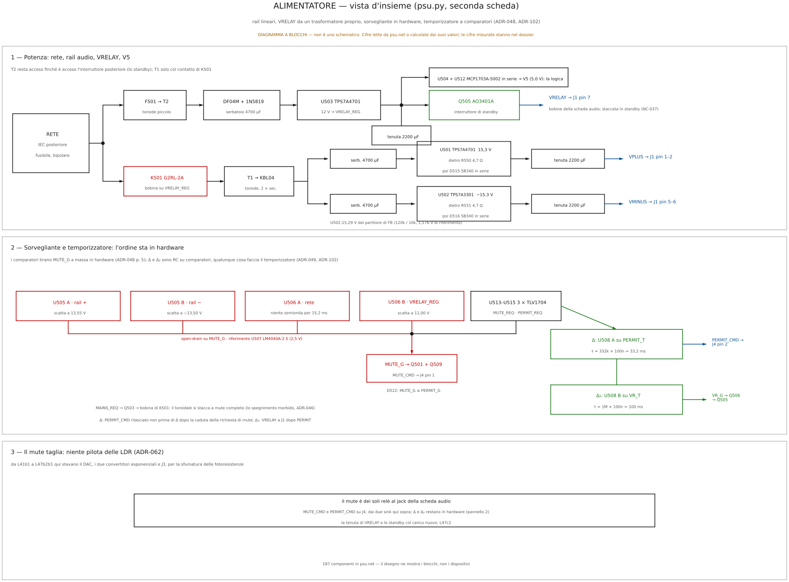
Disegno docs/preamp/schematic/psu_draw.py · 187 parti, confrontate con circuits/preamp/psu.net nei due sensi (scripts/check_schematic.py) · ridisegnato oggi dal sorgente, uguale a quello versionato · da ingrandire: docs/preamp/schematic/psu.pdf
Ogni parte della netlist, coi test point (ADR-107) e il temporizzatore a comparatori (ADR-102). Nessuna parte del disegno manca alla netlist, e nessuna della netlist manca al disegno.
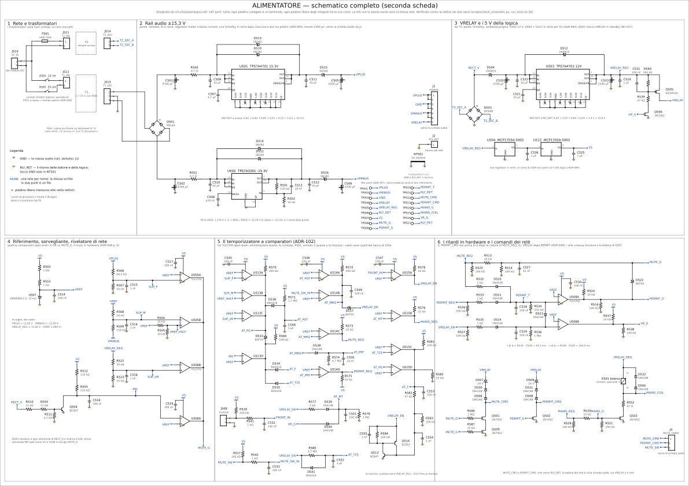
| Decisione | Che cosa | La cifra che la regge, dai dati |
|---|---|---|
| ADR-048 | rail lineari (nessuno switching), VRELAY da un trasformatore proprio, il sorvegliante in hardware sul gate del sink di MUTE_CMD | alla perdita di rete MUTE_CMD rilasciato a 14,402 ms, coi rail ancora a 14,985 / −14,972 V |
| ADR-091, ADR-092 | la partenza morbida dei regolatori (C507, C508) e la 4,7 Ω davanti a ciascuno (R550, R551) | a freddo la musica a 2046 ms, dallo standby a 1209 ms · R550 + R551 0,89 W |
| ADR-093, ADR-096 | lo Schottky dopo ogni regolatore, la retroazione sul piedino (15,3 V impostati) | i rail a regime 14,9854 / −14,9723 V · i due SB340 0,19 W |
| ADR-051 | il corto della linea a 12 V dei relè accettato sotto il tetto (guasto singolo) | 69,7 dB SPL (6,492 mV) al jack · tetto 112,2 dB SPL |
| ADR-064 | il selettore: una bobina sempre accesa su VRELAY | tenuta di VRELAY_REG a rete −10 % 50,277 ms (P9: ≥ 25) |
| ADR-102, ADR-103 | il temporizzatore a comparatori, lo standby, R585 sul nodo della ritenuta | il permissivo ≥ 39,6 ms dopo il mute · lo standby 129,7 mW da T2 |
| ADR-104, ADR-105, ADR-108 | i diodi a bassa perdita, R571, i condensatori dei ritardi in C0G e in film | la musica 612,8 ms dopo un buco di 20 ms (≥ 500), la peggiore delle tre reti |
| ADR-110 | la coppia Q501 + Q509 in serie sul mute, la procedura col tester (DIAGNOSI.md) | 64 corse dei guasti singoli della coppia alle tre reti: 51 come la coppia sana, 6 col solo K501 spostato (al più 2,5 ms), 7 col mute che resta inserito, 0 altro (sezione 26) |
Deck docs/preamp/data/2026-11-03/L64b/rete/tb_psu_rete.cir · dati docs/preamp/data/2026-11-03/L64b/ · corso il 2026-11-03 sul psu.net di oggi, col carico di oggi; deck rigenerati da questa pagina e uguali a quelli corsi
Inclusi: models/diodes/1n4148.lib, models/diodes/bav199.lib, models/mosfet_n/generic_nmos.lib, models/mosfet_p/generic_pmos.lib, models/bjt_npn/generic_npn.lib, models/bjt_pnp/generic_pnp.lib, docs/preamp/data/2026-11-03/L64b/psu/cmpta.lib · comportamentali: REGP, REGM, REGPSS, REGMSS, CMPOD, SHUNT25 · i regolatori e i comparatori sono modelli dichiarati, il comparatore tarato sul modello di TI (ADR-103)
Il carico di oggi. La scheda audio pesa sul banco come la misura tb_op di oggi: 303,3288 mA sul rail + e 311,5182 mA sul −, otto blocchi (ADR-054; L51b ne caricava 293,62 e 301,79, il blocco di prima di L66). Su VRELAY, oltre alle bobine del mute e del guadagno, 51,5 mA del resto della scheda, con la bobina del selettore sempre accesa (L48a). Il banco è quello di L51b sull’alimentatore di oggi: i casi a regime e la perdita di rete a 3 s, quando l’accensione a freddo ha già dato la musica (2046 ms).
| Rete | V+ | V− | VRELAY_REG | VRELAY a J1 | V5 | valle del grezzo + | valle − | valle di VRELAY |
|---|---|---|---|---|---|---|---|---|
| −10 % | 14,9854 V | −14,9723 V | 11,9999 V | 11,9954 V | 4,98 V | 17,881 V | 17,844 V | 13,085 V |
| nominale | 14,9854 V | −14,9723 V | 11,9999 V | 11,9954 V | 4,98 V | 20,115 V | 20,077 V | 15,007 V |
| +10 % | 14,9854 V | −14,9723 V | 11,9999 V | 11,9954 V | 4,98 V | 22,353 V | 22,314 V | 16,937 V |
A rete −10 % la valle del grezzo più bassa è 17,844 V. Fra il grezzo e il rail ci sono ora la 4,7 Ω, il regolatore e lo Schottky: i regolatori sono impostati a 15,3 V perché il rail resti a ~15 V dietro il diodo (ADR-093). È il margine del raddrizzatore col toroidale di ADR-048 (2 × 15 V, 50 VA), misurato sul banco col carico di oggi; il trasformatore vero va confermato sul pezzo.
| Rete | MUTE_CMD rilasciato | rivelatore | rail + a 13,5 / 10,6 V | rail al rilascio | VRELAY_REG ≥ 11,4 V dopo | P9: ≥ 25 ms |
|---|---|---|---|---|---|---|
| −10 % | 14,31 ms | 14,314 ms | 92,379 / 229,199 ms | 14,985 / −14,968 V | 50,277 ms | conforme |
| nominale | 14,402 ms | 14,405 ms | 120,124 / 256,941 ms | 14,985 / −14,972 V | 109,562 ms | conforme |
| +10 % | 14,476 ms | 14,48 ms | 147,903 / 284,72 ms | 14,985 / −14,972 V | 169,087 ms | conforme |
| Caso | MUTE_CMD rilasciato | dopo lo scatto a |13,5 V| | rail al rilascio | VRELAY_REG ≥ 11,4 / ≥ 9,6 V | P9: entro 1 ms |
|---|---|---|---|---|---|
| U501 (rail +) spento | 42,062 ms | −2,121 ms | 13,561 / −14,972 V | > 257,938 / > 257,938 ms | conforme |
| U502 (rail −) spento | 11,948 ms | −0,174 ms | 14,985 / −13,521 V | > 288,052 / > 288,052 ms | conforme |
U503 (VRELAY_REG) spento | 14,864 ms | — | 14,985 / −14,972 V | 0 / 30,69 ms | scatta su VRELAY_REG |
| perdita di rete, rivelatore guasto, −10 % | 49,865 ms | −0,54 ms | 14,385 / −13,526 V | 6,628 / 346,99 ms | conforme |
| idem, nominale | 76,828 ms | −0,54 ms | 14,401 / −13,526 V | 46,819 / > 323,172 ms | conforme |
| idem, +10 % | 103,828 ms | −0,56 ms | 14,417 / −13,527 V | 79,143 / > 296,172 ms | conforme |
Un tempo negativo dopo lo scatto vuol dire che il mute è già rilasciato prima che un rail arrivi alla soglia. Col rivelatore di rete guasto il caso è doppio (la rete persa e il rivelatore rotto), come L41a lo dichiarò: scatta il sorvegliante dei rail. Il rivelatore guasto è R512 aperta: è la metà di R_MD (ADR-094), 110 kΩ nella netlist e in ogni caso del log, salvo quello che la apre.
L51b correva il micro, il carico della scheda audio di prima di L66 e l’alimentatore di prima di ADR-091…094: la partenza morbida, la 4,7 Ω, lo Schottky, R_MD sdoppiata, i 5 V in serie. Ogni cifra che si sposta oltre la tolleranza della ricorsa (0,5 ms o l’1 % sui tempi, 10 mV sulle tensioni, 50 mV su quelle prese all’istante dello scatto):
| Caso | Grandezza | L51b | oggi |
|---|---|---|---|
| perdita di rete, −10 % | rail + a 13,5 V [ms] | 65,477 | 92,379 |
| perdita di rete, −10 % | rail + a 10,6 V [ms] | 120,057 | 229,199 |
| perdita di rete, −10 % | rail − a 13,5 V [ms] | 63,577 | 50,412 |
| perdita di rete, −10 % | rail − a 10,6 V [ms] | 116,597 | 109,259 |
| perdita di rete, −10 % | dopo lo scatto a 13,5 V [ms] | −49,352 | −36,102 |
| perdita di rete, −10 % | VRELAY_REG ≥ 11,4 V [ms] | 48,332 | 50,277 |
| perdita di rete, −10 % | VRELAY_REG ≥ 9,6 V [ms] | 163,272 | 143,129 |
| perdita di rete, −10 % | V− al rilascio [V] | −15,052 | −14,968 |
| perdita di rete, nominale | rail + a 13,5 V [ms] | 94,148 | 120,124 |
| perdita di rete, nominale | rail + a 10,6 V [ms] | 148,708 | 256,941 |
| perdita di rete, nominale | rail − a 13,5 V [ms] | 91,428 | 77,381 |
| perdita di rete, nominale | rail − a 10,6 V [ms] | 144,448 | 136,224 |
| perdita di rete, nominale | dopo lo scatto a 13,5 V [ms] | −77,112 | −62,980 |
| perdita di rete, nominale | VRELAY_REG ≥ 11,4 V [ms] | 121,712 | 109,562 |
| perdita di rete, nominale | VRELAY_REG ≥ 9,6 V [ms] | 236,652 | 202,419 |
| perdita di rete, nominale | V− al rilascio [V] | −15,052 | −14,972 |
| perdita di rete, +10 % | rail + a 13,5 V [ms] | 122,856 | 147,903 |
| perdita di rete, +10 % | rail + a 10,6 V [ms] | 177,416 | 284,720 |
| perdita di rete, +10 % | rail − a 13,5 V [ms] | 119,316 | 104,386 |
| perdita di rete, +10 % | rail − a 10,6 V [ms] | 172,336 | 163,243 |
| perdita di rete, +10 % | dopo lo scatto a 13,5 V [ms] | −104,925 | −89,910 |
| perdita di rete, +10 % | VRELAY_REG ≥ 11,4 V [ms] | 195,405 | 169,087 |
| perdita di rete, +10 % | VRELAY_REG ≥ 9,6 V [ms] | 310,365 | 261,944 |
| perdita di rete, +10 % | V− al rilascio [V] | −15,052 | −14,972 |
| a regime, rete −10 % | V+ [V] | 14,9997 | 14,9854 |
| a regime, rete −10 % | V− [V] | −15,0525 | −14,9723 |
| a regime, rete −10 % | V5 [V] | 5,0000 | 4,9800 |
| a regime, rete −10 % | valle del grezzo + [V] | 17,922 | 17,881 |
| a regime, rete −10 % | valle del grezzo − [V] | 17,885 | 17,844 |
| a regime, rete −10 % | valle di VRELAY [V] | 13,033 | 13,085 |
| a regime, rete nominale | V+ [V] | 14,9997 | 14,9854 |
| a regime, rete nominale | V− [V] | −15,0525 | −14,9723 |
| a regime, rete nominale | V5 [V] | 5,0000 | 4,9800 |
| a regime, rete nominale | valle del grezzo + [V] | 20,158 | 20,115 |
| a regime, rete nominale | valle del grezzo − [V] | 20,120 | 20,077 |
| a regime, rete nominale | valle di VRELAY [V] | 14,953 | 15,007 |
| a regime, rete +10 % | V+ [V] | 14,9997 | 14,9854 |
| a regime, rete +10 % | V− [V] | −15,0525 | −14,9723 |
| a regime, rete +10 % | V5 [V] | 5,0000 | 4,9800 |
| a regime, rete +10 % | valle del grezzo + [V] | 22,397 | 22,353 |
| a regime, rete +10 % | valle del grezzo − [V] | 22,358 | 22,314 |
| a regime, rete +10 % | valle di VRELAY [V] | 16,881 | 16,937 |
| U501 (rail +) spento | MUTE_CMD rilasciato [ms] | 8,654 | 42,062 |
| U501 (rail +) spento | rail + a 13,5 V [ms] | 8,983 | 44,183 |
| U501 (rail +) spento | rail + a 10,6 V [ms] | 26,453 | 145,224 |
| U501 (rail +) spento | dopo lo scatto a 13,5 V [ms] | −0,329 | −2,121 |
| U501 (rail +) spento | VRELAY_REG ≥ 11,4 V [ms] | >291,346 | >257,938 |
| U501 (rail +) spento | VRELAY_REG ≥ 9,6 V [ms] | >291,346 | >257,938 |
| U501 (rail +) spento | V− al rilascio [V] | −15,052 | −14,972 |
| U502 (rail −) spento | MUTE_CMD rilasciato [ms] | 8,958 | 11,948 |
| U502 (rail −) spento | rail − a 13,5 V [ms] | 9,048 | 12,122 |
| U502 (rail −) spento | rail − a 10,6 V [ms] | 26,046 | 36,058 |
| U502 (rail −) spento | VRELAY_REG ≥ 11,4 V [ms] | >291,042 | >288,052 |
| U502 (rail −) spento | VRELAY_REG ≥ 9,6 V [ms] | >291,042 | >288,052 |
U503 (VRELAY_REG) spento | VRELAY_REG ≥ 9,6 V [ms] | 29,305 | 30,690 |
U503 (VRELAY_REG) spento | V− al rilascio [V] | −15,052 | −14,972 |
| rivelatore guasto, rete −10 % | MUTE_CMD rilasciato [ms] | 63,175 | 49,865 |
| rivelatore guasto, rete −10 % | rail + a 13,5 V [ms] | 65,475 | 92,386 |
| rivelatore guasto, rete −10 % | rail + a 10,6 V [ms] | 120,055 | 229,196 |
| rivelatore guasto, rete −10 % | rail − a 13,5 V [ms] | 63,575 | 50,405 |
| rivelatore guasto, rete −10 % | rail − a 10,6 V [ms] | 116,595 | 109,266 |
| rivelatore guasto, rete −10 % | VRELAY_REG ≥ 11,4 V [ms] | 0,000 | 6,628 |
| rivelatore guasto, rete −10 % | VRELAY_REG ≥ 9,6 V [ms] | 100,820 | 346,990 |
| rivelatore guasto, rete −10 % | V+ al rilascio [V] | 13,622 | 14,385 |
| rivelatore guasto, rete nominale | MUTE_CMD rilasciato [ms] | 91,002 | 76,828 |
| rivelatore guasto, rete nominale | rail + a 13,5 V [ms] | 94,142 | 120,126 |
| rivelatore guasto, rete nominale | rail + a 10,6 V [ms] | 148,722 | 256,928 |
| rivelatore guasto, rete nominale | rail − a 13,5 V [ms] | 91,422 | 77,368 |
| rivelatore guasto, rete nominale | rail − a 10,6 V [ms] | 144,442 | 136,226 |
| rivelatore guasto, rete nominale | VRELAY_REG ≥ 11,4 V [ms] | 23,800 | 46,819 |
| rivelatore guasto, rete nominale | VRELAY_REG ≥ 9,6 V [ms] | 138,760 | >323,172 |
| rivelatore guasto, rete nominale | V+ al rilascio [V] | 13,667 | 14,401 |
| rivelatore guasto, rete +10 % | MUTE_CMD rilasciato [ms] | 118,899 | 103,828 |
| rivelatore guasto, rete +10 % | rail + a 13,5 V [ms] | 122,859 | 147,895 |
| rivelatore guasto, rete +10 % | rail + a 10,6 V [ms] | 177,434 | 284,714 |
| rivelatore guasto, rete +10 % | rail − a 13,5 V [ms] | 119,319 | 104,388 |
| rivelatore guasto, rete +10 % | rail − a 10,6 V [ms] | 172,334 | 163,240 |
| rivelatore guasto, rete +10 % | VRELAY_REG ≥ 11,4 V [ms] | 61,975 | 79,143 |
| rivelatore guasto, rete +10 % | VRELAY_REG ≥ 9,6 V [ms] | 176,915 | >296,172 |
| rivelatore guasto, rete +10 % | V+ al rilascio [V] | 13,710 | 14,417 |
Una causa è certa: lo Schottky dopo il regolatore, con la tensione impostata 0,3 V più su (ADR-093), porta i rail a regime da 15,000 / −15,052 V a 14,9854 / −14,9723 V. Le altre si leggono, non si spiegano qui: alla perdita di rete a −10 % il rail + arriva a 13,5 V più tardi (65,477 → 92,379 ms) e il rail − più presto (63,577 → 50,412 ms); in ogni caso il mute è rilasciato decine di millisecondi prima. La tenuta di VRELAY_REG a rete −10 %, quella che P9 giudica, passa da 48,332 a 50,277 ms, contro ≥ 25.
Deck docs/preamp/data/2026-11-03/L64b/seq/oggi/perdita/tb_psu_seq_perdita_g1.cir · dati docs/preamp/data/2026-11-03/L64b/seq/ · 120 corse il 2026-11-03 sul psu.net di oggi, col carico di oggi, ognuna col suo deck rigenerato da questa pagina e uguale a quello corso · seconda strada: docs/preamp/data/2026-11-03/L64b/script/confronta.py, rieseguito
Inclusi: models/diodes/bat54.lib, models/bjt_npn/bc847b.lib, models/bjt_pnp/bc857b.lib, models/diodes/1n4148.lib, models/diodes/bav199.lib, models/mosfet_n/generic_nmos.lib, models/mosfet_p/generic_pmos.lib, models/bjt_npn/generic_npn.lib, models/bjt_pnp/generic_pnp.lib, docs/preamp/data/2026-11-03/L64b/psu/cmpta.lib · comportamentali: REGP, REGM, REGPSS, REGMSS, CMPOD, SHUNT25 · i regolatori e i comparatori sono modelli dichiarati, il comparatore tarato sul modello di TI (ADR-103)
Le sequenze dell’alimentatore col temporizzatore del sorgente, una corsa per caso: non c’è più un programma da iterare col circuito. I relè sono presi all’angolo peggiore del G6K: il jack staccato il più tardi possibile, il guadagno a 0 dB il più presto possibile. I criteri: C2, il mute eccitato solo col permissivo eccitato; C3, ogni rilascio del mute seguito da quello del permissivo almeno 16,9 ms dopo (Δ, ADR-045); r41, il jack staccato prima che il guadagno si muova; s41, il jack staccato prima che il rail + scenda sotto 10,6 V. Dove un criterio non si applica (all’accensione il jack non si stacca) la cella è vuota.
| Caso | jack, tardi | guadagno, presto | Δ | V+ < 10,6 V | K501 | Criteri |
|---|---|---|---|---|---|---|
| spegnimento dal frontale | 10,3 ms | 46,8 ms | 39,6 ms | 418,6 ms | 122,5 ms | 4 su 4 |
| perdita di rete | 17,4 ms | 54,9 ms | 40,5 ms | 298,6 ms | 221,6 ms | 4 su 4 |
| idem, Δ all’angolo minimo | 17,5 ms | 53,9 ms | 39,4 ms | 298,6 ms | 221,3 ms | 4 su 4 |
| U502 (rail −) spento | 15,6 ms | 52,9 ms | 40,3 ms | 428,6 ms | 129,1 ms | 4 su 4 |
| U501 (rail +) spento | 48,1 ms | 85,6 ms | 40,5 ms | 175,7 ms | 161,9 ms | 4 su 4 |
U503 (VRELAY_REG) spento | 17,9 ms | 45,1 ms | 40,2 ms | 348,6 ms | 50,1 ms | 4 su 4 |
| idem, angolo minimo | 17,6 ms | 45,2 ms | 39,1 ms | 348,6 ms | 50,2 ms | 4 su 4 |
| controfattuale senza Δ | 17,4 ms | 14,7 ms | 0,3 ms | 298,6 ms | 212,4 ms | C3 e r41 cadono, come devono |
| corto dell’uscita di U503 | 3,1 ms | 0,1 ms | 0,1 ms | 298,6 ms | 3,5 ms | nessun verdetto: decisione dell’utente (ADR-051), 2 su 4 |
I tempi sono dall’evento: il frontale per lo spegnimento, la rete o il regolatore per gli altri. K501 stacca il toroidale: con U503 spento la sua bobina resta senza alimentazione e si apre per prima, e il margine di ADR-046 (K501 ≥ 50 ms dopo il permissivo) vale per lo spegnimento dal frontale, 75,6 ms.
| Guasto e evento | jack | guadagno | la musica | ritenuta | K501 alla fine |
|---|---|---|---|---|---|
f_c509_corto_mus | 48 ms | 85,5 ms | — | scattata | aperto |
f_c509_corto_musp10 | 48 ms | 85,5 ms | — | scattata | aperto |
f_k501_bobina_musp10s | 109,5 ms | 147,3 ms | — | scattata | aperto |
f_k501_bobina_muss | 82,4 ms | 120,2 ms | — | scattata | aperto |
f_u505a_cieco_gu501 | 48,9 ms | 85,6 ms | — | scattata | aperto |
f_u505b_cieco_gu502 | 16,2 ms | 52,9 ms | — | scattata | aperto |
f_u506b_cieco_gu503 | 18,4 ms | 44,9 ms | — | scattata | aperto |
La seconda strada. 138 righe di L54b3b e L58b, rappresentate da 117 corse di oggi: 4255 celle confrontate, 4002 identiche, 253 entro la tolleranza, 0 fuori. La tolleranza è l’unità della cifra stampata (0,1 ms, 0,01 V) contro L58b, che correva lo stesso psu.py; contro le corse di prima della coppia Q501 + Q509 (L54b3b e le righe di L58b sul sorgente di prima) in più lo scarto che L58b misurò fra il sorgente nuovo e la variante, 0,1 ms. I 107 deck di L58b sono quelli di oggi a meno del carico della scheda audio (la coppia letta con i nomi della variante, o tolta per le corse di prima della coppia).
Deck docs/preamp/data/2026-11-03/L64b/seq/oggi/accensione/tb_psu_seq_accensione_g1.cir · dati docs/preamp/data/2026-11-03/L64b/seq/ · le stesse corse della sezione sopra
Inclusi: models/diodes/bat54.lib, models/bjt_npn/bc847b.lib, models/bjt_pnp/bc857b.lib, models/diodes/1n4148.lib, models/diodes/bav199.lib, models/mosfet_n/generic_nmos.lib, models/mosfet_p/generic_pmos.lib, models/bjt_npn/generic_npn.lib, models/bjt_pnp/generic_pnp.lib, docs/preamp/data/2026-11-03/L64b/psu/cmpta.lib · comportamentali: REGP, REGM, REGPSS, REGMSS, CMPOD, SHUNT25 · i regolatori e i comparatori sono modelli dichiarati, il comparatore tarato sul modello di TI (ADR-103)
Il temporizzatore a comparatori fa quello che faceva il micro: con l’alimentazione buona (i rail e la rete sopra soglia) rilascia il permissivo e poi il mute; a una perdita o a un guasto li inserisce nell’ordine giusto; a un guasto lungo arma una ritenuta che apre K501 e tiene spento finché non si spegne il frontale. I criteri sono quelli di L54b3b, scritti prima delle corse, e le soglie si leggono dalle decisioni che le hanno fissate.
| Caso | rete −10 % | nominale | +10 % |
|---|---|---|---|
| accensione dallo standby: la musica | 1209 ms | 1209 ms | 1209 ms |
| accensione a freddo: la musica | — | 2046 ms | — |
| un buco di 20 ms: la musica dopo la rete | 613,9 ms | 613,3 ms | 612,8 ms |
| un buco di 200 ms: la musica dopo la rete | 729,5 ms | 681,9 ms | 677,8 ms |
| perdita di rete: il jack | 17,4 ms | 17,4 ms | 17,5 ms |
| accensione: la ritenuta armata | 2174 ms | 2174 ms | 2174 ms |
| Criterio | Corse | il peggiore | Esito |
|---|---|---|---|
| il permissivo ≥ 16,9 ms dopo il mute | 7 | 39,6 ms | 7 su 7 |
| la musica ≥ 500 ms dopo la rete, un buco di 20 ms | 3 | 612,8 ms | 3 su 3 |
| K501 ≥ 50 ms dopo il permissivo, dal frontale | 1 | 75,6 ms | 1 su 1 |
| la ritenuta armata dopo l’alimentazione buona, e non scatta | 4 | 1048 ms | 4 su 4 |
| la base della ritenuta ≤ 0,45 V all’accensione | 4 | 0,2714 V | 4 su 4 |
| con U501 spento all’accensione la ritenuta scatta e K501 si apre | 2 | — | 2 su 2 |
Lo standby. Con l’interruttore frontale spento il toroidale è staccato (K501 aperto) e resta acceso solo T2, che alimenta la logica a 5 V: 115,8 / 129,7 / 143,8 mW dal suo secondario (rete −10 % / nominale / +10 %, la media su 2,5–3,0 s di una corsa d’accensione prima del frontale). L54b2, sul sorgente di prima di ADR-104, 105 e 110, dava 116,1 / 130,1 / 144,2 mW (lo stesso ordine delle reti). Le perdite a vuoto del trasformatore non sono qui: si leggono sul pezzo.
Deck docs/preamp/data/2026-11-03/L64b/seq/oggi/f_q509_gd_accs/tb_psu_seq_f_q509_gd_accs_g1.cir · dati docs/preamp/data/2026-11-03/L64b/seq/ · i guasti di L58b (psu/modi.py) coi nomi del sorgente di oggi · procedura: docs/preamp/DIAGNOSI.md
Inclusi: models/diodes/bat54.lib, models/bjt_npn/bc847b.lib, models/bjt_pnp/bc857b.lib, models/diodes/1n4148.lib, models/diodes/bav199.lib, models/mosfet_n/generic_nmos.lib, models/mosfet_p/generic_pmos.lib, models/bjt_npn/generic_npn.lib, models/bjt_pnp/generic_pnp.lib, docs/preamp/data/2026-11-03/L64b/psu/cmpta.lib · comportamentali: REGP, REGM, REGPSS, REGMSS, CMPOD, SHUNT25 · i regolatori e i comparatori sono modelli dichiarati, il comparatore tarato sul modello di TI (ADR-103)
Un guasto che non si vede finché un secondo guasto non lo rende pericoloso è latente: ADR-110 li manda a una procedura col tester (DIAGNOSI.md) e, per il mute, mette in serie al transistor che lo comanda un secondo transistor (Q501 + Q509): uno in corto lascia l’altro a fare il lavoro. Ogni guasto singolo, latente dall’accensione, contro otto eventi, letto contro la corsa sana dello stesso evento: «come sano» vuol dire le stesse bandierine e gli stessi tempi entro 0,1 ms.
| Guasto | accensione | a freddo | U502 spento | buco 20 ms | perdita | spegnimento | U501 spento | mute dal frontale |
|---|---|---|---|---|---|---|---|---|
f_q501a_corto | come sano | come sano | come sano | come sano | t_k501_ms 221.4 (sano 221.6) | come sano | come sano | come sano |
f_q501a_gd | come sano | come sano | come sano | come sano | t_k501_ms 224.1 (sano 221.6) | come sano | come sano | come sano |
f_q503_corto | s41 1 (sano 0); t_k501_ms — (sano 0.0); t_mus_ms 17.4 (sano 1209.3) | — | — | — | — | t_k501_ms — (sano 122.5); k501_end 1 (sano 0) | — | — |
f_q505_corto | come sano | — | — | — | — | come sano | — | — |
f_q506_corto | come sano | — | — | — | — | come sano | — | — |
f_q509_corto | come sano | come sano | come sano | come sano | t_k501_ms 221.4 (sano 221.6) | come sano | come sano | come sano |
f_q509_gd | t_mus_ms — (sano 1209.3); mus_end 0 (sano 1) | t_mus_ms — (sano 2045.7); mus_end 0 (sano 1) | musica_TE 0 (sano 1); t_jack_ms 3.0 (sano 15.6) | musica_TE 0 (sano 1); t_jack_ms 3.0 (sano 17.4); t_mus_ms — (sano 633.4) | musica_TE 0 (sano 1); t_jack_ms 3.0 (sano 17.4); t_k501_ms 241.3 (sano 221.6) | musica_TE 0 (sano 1); t_jack_ms 3.0 (sano 10.3) | come sano | musica_TE 0 (sano 1); t_jack_ms 3.0 (sano 10.3) |
f_r536_aperto | t_mus_ms 1209.0 (sano 1209.3) | — | — | — | — | t_gain_ms 47.7 (sano 46.8); t_k501_ms — (sano 122.5); k501_end 1 (sano 0) | — | — |
f_r537_corto | s41 1 (sano 0); t_k501_ms — (sano 0.0); t_mus_ms 17.4 (sano 1209.3) | — | — | — | — | t_gain_ms 47.0 (sano 46.8); t_k501_ms — (sano 122.5); k501_end 1 (sano 0) | — | — |
f_r540_aperto | come sano | — | — | — | — | come sano | — | — |
f_rq501g_aperto | come sano | come sano | come sano | come sano | come sano | come sano | come sano | come sano |
f_rq509g_aperto | come sano | come sano | come sano | come sano | come sano | come sano | come sano | come sano |
f_u508b_cieco | s41 1 (sano 0); t_k501_ms — (sano 0.0); t_mus_ms 17.4 (sano 1209.3) | — | — | — | — | t_k501_ms — (sano 122.5); k501_end 1 (sano 0) | — | — |
Una cella rossa non è un verdetto: dice che il guasto si vede in quell’evento, ed è quello che la procedura cerca. Le righe dello standby (Q505, Q506, R540, R536, R537, U508 B, Q503) cambiano lo standby a regime, non le sequenze: il censimento qui sotto.
| Corsa | VRELAY alla scheda in standby | LED | K501 in standby | la musica (le bobine del mute) | i rail partono |
|---|---|---|---|---|---|
accensione | 0 V | 0 mA | aperto | 1209 ms | 543,7 ms |
f_q503_corto_accs | 0 V | 0 mA | chiuso | 17,4 ms | 0 ms |
f_q505_corto_accs | 11,9911 V | 2,0022 mA | aperto | 1209 ms | 543,7 ms |
f_q506_corto_accs | 11,9956 V | 2,0031 mA | aperto | 1209 ms | 543,7 ms |
f_r536_aperto_accs | 0 V | 0 mA | aperto | 1209 ms | 543,4 ms |
f_r537_corto_accs | 11,9954 V | 2,0031 mA | chiuso | 17,4 ms | 0 ms |
f_r540_aperto_accs | 11,9742 V | 1,9988 mA | aperto | 1209 ms | 543,7 ms |
f_u508b_cieco_accs | 11,9955 V | 2,0031 mA | chiuso | 17,4 ms | 0 ms |
Scheda audio docs/preamp/data/2026-11-03/L64b/deck/tb_v2_l41c_nom.cir (e _m10, _p10), dal sorgente di oggi e dal ponte delle sequenze di oggi, rigenerato da questa pagina e uguale a quello corso · il metodo di V2, il contatto col fronte di 4,55 µs (ADR-063) · tabella.py rieseguito sull’analisi · i dB SPL ricalcolati con la catena di NC-028 (finale ×21,1, 96 dB con 2,83 V): un limite superiore, di picco, a 1 m
Un gradino al jack, detto contro una stanza silenziosa (25–35 dB(A), un livello pesato contro un picco): V2 è 33,4 dB SPL, l’obiettivo di P9 59,5 dB, il tetto di non-danno 112,2 dB. A rete −10 % e +10 % corrono dalle loro sequenze lo spegnimento e le due perdite; le altre righe sono quelle nominali.
| Caso | rete −10 % | nominale | +10 % | Criterio | Esito |
|---|---|---|---|---|---|
| spegnimento dal frontale | −55,6 dB SPL (3,542 nV) | −55,6 dB SPL (3,542 nV) | −55,6 dB SPL (3,542 nV) | ≤ 0,0001 V | sotto |
| perdita di rete | 4,3 dB SPL (3,498 µV) | −55,2 dB SPL (3,694 nV) | −55,3 dB SPL (3,639 nV) | ≤ 0,002 V | sotto |
| idem, Δ all’angolo minimo | 4,3 dB SPL (3,498 µV) | −55,2 dB SPL (3,697 nV) | −55,2 dB SPL (3,691 nV) | ≤ 0,002 V | sotto |
| U502 (rail −) spento | — | 16,3 dB SPL (13,88 µV) | — | ≤ 0,002 V | sotto |
| U501 (rail +) spento | — | 32,2 dB SPL (86,96 µV) | — | ≤ 0,002 V | sotto |
U503 (VRELAY_REG) spento | — | −55,2 dB SPL (3,703 nV) | — | ≤ 0,002 V | sotto |
| idem, angolo minimo | — | −55,3 dB SPL (3,657 nV) | — | ≤ 0,002 V | sotto |
| controfattuale senza Δ | — | 69,7 dB SPL (6,517 mV) | — | > 0,002 V (deve fallire) | fallisce, come deve |
| corto dell’uscita di U503 | — | 69,7 dB SPL (6,492 mV) | — | decisione dell'utente | tetto sotto |
L54b2 corse la stessa catena sul temporizzatore a comparatori di allora; da lì sono cambiati l’alimentatore (ADR-104, 105, 108, 110) e la scheda audio (L66, ADR-111). I picchi nominali, uno accanto all’altro:
| Caso | L54b2 | oggi | scarto |
|---|---|---|---|
| spegnimento dal frontale | 3,704 nV | 3,542 nV | −0,4 dB |
| perdita di rete | 3,632 nV | 3,694 nV | +0,1 dB |
| idem, Δ all’angolo minimo | 3,63 nV | 3,697 nV | +0,2 dB |
| U502 (rail −) spento | 13,41 µV | 13,88 µV | +0,3 dB |
| U501 (rail +) spento | 86,8 µV | 86,96 µV | +0,0 dB |
U503 (VRELAY_REG) spento | 3,698 nV | 3,703 nV | +0,0 dB |
| idem, angolo minimo | 3,641 nV | 3,657 nV | +0,0 dB |
| controfattuale senza Δ | 6,49 mV | 6,517 mV | +0,0 dB |
| corto dell’uscita di U503 | 6,474 mV | 6,492 mV | +0,0 dB |
I casi ai nanovolt si muovono di molti dB nelle due direzioni: sono il fondo del metodo, migliaia di volte sotto V2.
Le righe da docs/preamp/data/2026-10-24/L45d2b3b3/fmea_dopo.csv (L45d2b3b3: 539 righe, 539 nuove); docs/preamp/data/2026-10-29/L58a/fmea_alimentatore.csv (L58a2: 15 righe, 15 nuove); docs/preamp/data/2026-11-01/L58b/fmea_l58b.csv (L58b: 60 righe, 9 nuove); docs/preamp/data/2026-11-02/L66/fmea_l66.csv (L66: 145 righe, 0 nuove); docs/preamp/data/2026-11-03/L64c/fmea_l64c.csv (L64c: 28 righe, 0 nuove) · composte in docs/preamp/data/2026-11-03/L64c/fmea_oggi.csv
Ogni guasto singolo di ogni parte delle due schede, nella forma di ADR-070: la gravità G (1–5, dal nessun effetto al pericolo), la probabilità P (1–4, dal tasso di guasto della parte e del modo), la rilevabilità R (1–3, da «si vede subito» a «nessuno se ne accorge»), e la priorità che la matrice ne dà. Ogni lotto che ha misurato di nuovo un guasto ha riscritto la sua riga: la FMEA di oggi è la riga più recente di ciascuno, 563 righe. «Prima» è la priorità di L45, prima dei rimedi; le parti aggiunte dopo (79 righe) non hanno un prima.
| Priorità | Prima dei rimedi | Oggi |
|---|---|---|
| alta | 101 | 15 |
| media | 56 | 67 |
| bassa | 327 | 476 |
| esclusa | — | 5 |
| parti aggiunte dopo L45 | 79 | — |
Dove va ogni riga, dal suo stato:
| Destinazione | alta | media | bassa | esclusa |
|---|---|---|---|---|
| nel circuito | 24 | 142 | ||
| rivelata dall’autodiagnosi | 6 | |||
| misurata, nessun rimedio | 1 | 60 | ||
| a calcolo, senza corsa | 3 | |||
| accettata | 7 | 41 | 5 | |
| a G2 | 1 | 1 | 1 | |
| invariata (riga di L45) | 259 | |||
| esclusa | 5 | |||
| NC-072, I regolatori dei rail a regime oltre i 125 °C a rete +10 % con 60 °C d'aria (aperta) | 2 | |||
| NC-073, La resistenza davanti al regolatore riceve 80–100 W per ~0,1 s in un corto sul piedino (aperta) | 3 | |||
| NC-075, Col condensatore della cella RC in corto, ciascuna delle due 20 Ω riceve ~1,3 J in ~0,25 s (aperta) | 1 | |||
| NC-077, Con R585 in corto la ritenuta è cieca: dopo un guasto di rail il toroidale resta acceso (aperta;) | 1 |
| Parte | Funzione | Modo | Prima | G·P·R | Effetto, oggi | Al jack | Tj | Stato | Da |
|---|---|---|---|---|---|---|---|---|---|
| C145 | condensatore della cella RC (1000 uF) | corto | alta | 5·3·2 | Tj max a 60 C 67 C (q106, F2); principale 15 V (137.0 dB SPL), fissa 1 14.8 V; Stax 123.6 ms sopra 0,87 V | 137,0 dB SPL | 67 °C | NC-075 (alla scelta della parte) | L66 |
| K501 | il rele' di rete | bobina in corto | alta | 5·2·1 | le parti del comando e dei 5 V al piu' 176.1 C a 100 ms; oltre: RK (47 ohm, 2 W) (176.1 C): NC-073 | NC-073 (alla scelta della parte) | L45d2b3b3 | ||
| F501 | la linea dei rele' (VRELAY_REG) | in corto (o sovradimensionato) | alta | 5·2·3 | come prima: il rimedio non e' nel circuito | a G2 (L45d2a) | L45d2b3b3 | ||
| C510 | il secondario, il ponte e i serbatoi | corto | alta | 5·1·1 | il sorvegliante muta, il jack prima del crollo (~32 dB SPL, ADR-093); R550 / R551 al piu' 82.9 W, 5.73 J: l'impulso di NC-073 | NC-073 (alla scelta della parte) | L45d2b3b3 | ||
| K2-K4 | il mute che non si inserisce | NO saldato, poi lo spegnimento | alta | 4·2·3 | come prima su quell'uscita; il segno: il mute non zittisce quell'uscita, e a ogni accensione il jack prende la salita dei rail, principale 70 mV (~90 dB SPL), fisse 0,64 / 0,66 V (~110 dB SPL), uguale a rete -10 / +10 % (v2/analisi.csv, 100 kOhm sul jack) | accettata, dichiarata (l'utente, 2026-11-01: «si», coi dB; ADR-110) | L58b | ||
| K2-K4 | il mute che non si inserisce | NO saldato, poi la perdita di rete | alta | 4·2·3 | come prima su quell'uscita; il segno: il mute non zittisce quell'uscita, e a ogni accensione il jack prende la salita dei rail, principale 70 mV (~90 dB SPL), fisse 0,64 / 0,66 V (~110 dB SPL), uguale a rete -10 / +10 % (v2/analisi.csv, 100 kOhm sul jack) | accettata, dichiarata (l'utente, 2026-11-01: «si», coi dB; ADR-110) | L58b | ||
| K2-K4 | il mute che non si inserisce | NO saldato, poi U502 spento | alta | 4·2·3 | come prima su quell'uscita; il segno: il mute non zittisce quell'uscita, e a ogni accensione il jack prende la salita dei rail, principale 70 mV (~90 dB SPL), fisse 0,64 / 0,66 V (~110 dB SPL), uguale a rete -10 / +10 % (v2/analisi.csv, 100 kOhm sul jack) | accettata, dichiarata (l'utente, 2026-11-01: «si», coi dB; ADR-110) | L58b | ||
| K2-K4 | il mute che non si inserisce | NO saldato, poi U501 spento | alta | 4·2·3 | come prima su quell'uscita; il segno: il mute non zittisce quell'uscita, e a ogni accensione il jack prende la salita dei rail, principale 70 mV (~90 dB SPL), fisse 0,64 / 0,66 V (~110 dB SPL), uguale a rete -10 / +10 % (v2/analisi.csv, 100 kOhm sul jack) | accettata, dichiarata (l'utente, 2026-11-01: «si», coi dB; ADR-110) | L58b | ||
| C509 | il secondario, il ponte e i serbatoi | corto | media | 5·1·1 | il sorvegliante muta, il jack prima del crollo (~32 dB SPL, ADR-093); R550 / R551 al piu' 83.1 W, 7.21 J: l'impulso di NC-073 | NC-073 (alla scelta della parte) | L45d2b3b3 | ||
| R517 | il pull-up di MUTE_SW, il tasto del mute (ingresso del temporizzatore, 100 kOhm) | corto | bassa | 5·1·2 | i 5 V a 0,275 V attraverso l'interruttore chiuso: il temporizzatore non si alimenta, niente musica, K501 aperto, nessun colpo; U504 2,93 W, 241 °C a calcolo (lo spegnimento termico del regolatore a 150 °C) | 241 °C | accettata (ADR-114, come C536 in corto, ADR-097 punto 2): lo spegnimento termico del regolatore | L64c | |
| R518 | il pull-up di FRONT_SW, l'interruttore frontale (ingresso del temporizzatore, 100 kOhm) | corto | bassa | 5·1·2 | i 5 V a 0,275 V attraverso l'interruttore chiuso: il temporizzatore non si alimenta, niente musica, K501 aperto, nessun colpo; U504 2,93 W, 241 °C a calcolo (lo spegnimento termico del regolatore a 150 °C) | 241 °C | accettata (ADR-114, come C536 in corto, ADR-097 punto 2): lo spegnimento termico del regolatore | L64c | |
| C536 | fra i due regolatori dei 5 V (ADR-094) | corto | — | 5·1·2 | i 5 V persi (V5 al piu' basso 0,005 V): il temporizzatore si spegne e i rele' cadono insieme, il guadagno a 3,5 ms e il jack a 6,6 (3,1 ms col jack collegato), K501 a 5,6 ms; al jack 6,51 mV (69,7 dB SPL di picco a 1 m), uguale alle tre reti, come U503 in corto; U504 2,99 W, al piu' 246 °C a calcolo | 69,7 dB SPL | 246 °C | accettata (ADR-097, 2; ADR-114): lo spegnimento termico del regolatore; il colpo come U503 in corto (ADR-051) | L64c |
| R550 | 4,7 Ohm davanti al regolatore + (ADR-092) | corto | — | 5·1·3 | CALCOLO, non simulato: torna il caso prima di ADR-092: il regolatore + a 91,6 / 113,7 / 135,9 C a rete -10 / 0 / +10 %, 60 C d'aria (L45d2b2a/rpre.csv, 0 ohm), senza un segno | NC-072 (il rame al layout anche senza la resistenza, ADR-100) | L45d2b3b3 | ||
| R551 | 4,7 Ohm davanti al regolatore - (ADR-092) | corto | — | 5·1·3 | CALCOLO, non simulato: torna il caso prima di ADR-092: il regolatore - a 91,6 / 114,4 / 137,2 C a rete -10 / 0 / +10 %, 60 C d'aria (L45d2b2a/rpre.csv, 0 ohm), senza un segno | NC-072 (il rame al layout anche senza la resistenza, ADR-100) | L45d2b3b3 | ||
| R585 | la tenuta di AT_F verso il ritorno: l'innesco della ritenuta (ADR-103, 33 kOhm) | corto | alta | 4·1·3 | in funzionamento AT_F sta a ~0 V (0,007 V in standby e in musica, l58b_sorg/accensione): il tester non lo vede; a scheda spenta R585 si misura con l'ohmmetro (DIAGNOSI.md; la lettura in circuito da verificare sul prototipo) | accettata in P9 (e), ADR-109, NC-077 (invariata: l'utente, 2026-11-01, «R585 resta com'era») | L58b |
| Parte | Funzione | Modo | Prima | G·P·R | Effetto, oggi | Al jack | Tj | Stato | Da |
|---|---|---|---|---|---|---|---|---|---|
| Q132 | finale NPN (MJE15032) | corto C-E | alta | 3·3·2 | Tj max a 60 C 95 C (q125, F2); principale 21.4 V (140.1 dB SPL), fissa 1 14.7 V; Stax 123.9 ms sopra 0,87 V | 140,1 dB SPL | 95 °C | nel circuito (ADR-099), rimisurata sul sorgente | L66 |
| Q133 | finale PNP (MJE15033) | corto C-E | alta | 3·3·2 | Tj max a 60 C 118 C (q122, F2); principale 14.7 V (136.8 dB SPL), fissa 1 14.6 V; Stax 119.4 ms sopra 0,87 V | 136,8 dB SPL | 118 °C | nel circuito (ADR-099), rimisurata sul sorgente | L66 |
| JQ110A | JFET d'ingresso, lato segnale | corto D-S | alta | 3·3·2 | Tj max a 60 C 95 C (q106, F2); principale 16.2 V (137.7 dB SPL), fissa 1 13.6 V; Stax 124.4 ms sopra 0,87 V | 137,7 dB SPL | 95 °C | nel circuito, rimisurata | L66 |
| Q122 | VAS (DZT5401) | corto B-E | alta | 3·3·2 | Tj max a 60 C 67 C (q106, F2); principale 15 V (137.0 dB SPL), fissa 1 14.8 V; Stax 123.6 ms sopra 0,87 V | 137,0 dB SPL | 67 °C | nel circuito, rimisurata | L66 |
| Q125 | carico del VAS (DZT5551) | corto C-E | alta | 3·3·2 | Tj max a 60 C 118 C (q122, F2); principale 13.7 V (136.2 dB SPL), fissa 1 13.6 V; Stax 66.6 ms sopra 0,87 V | 136,2 dB SPL | 118 °C | nel circuito (ADR-099), rimisurata sul sorgente | L66 |
| Q127 | moltiplicatore di Vbe | corto B-E | alta | 3·2·3 | Tj max a 60 C 78 C (q106, F2); principale 0.0135 V (76.0 dB SPL), fissa 1 0.00423 V | 76,0 dB SPL | 78 °C | nel circuito, rimisurata | L66 |
| Q127 | moltiplicatore di Vbe | aperto | alta | 3·2·3 | Tj max a 60 C 78 C (q106, F2); principale 0.0137 V (76.2 dB SPL), fissa 1 0.00432 V | 76,2 dB SPL | 78 °C | nel circuito, rimisurata | L66 |
| R128 | moltiplicatore di Vbe (alto) | aperto | alta | 3·2·3 | Tj max a 60 C 78 C (q106, F2); principale 0.0142 V (76.5 dB SPL), fissa 1 0.00445 V | 76,5 dB SPL | 78 °C | nel circuito, rimisurata | L66 |
| R126 | emettitore del carico del VAS (56) | corto | alta | 3·1·3 | Tj max a 60 C 119 C (q122, F2); principale 14.6 V (136.8 dB SPL), fissa 1 14.6 V; Stax 72.2 ms sopra 0,87 V | 136,8 dB SPL | 119 °C | nel circuito (ADR-099), rimisurata sul sorgente | L66 |
| R129 | moltiplicatore di Vbe (basso) | corto | alta | 3·1·3 | Tj max a 60 C 78 C (q106, F2); principale 0.0135 V (76.0 dB SPL), fissa 1 0.00423 V | 76,0 dB SPL | 78 °C | nel circuito, rimisurata | L66 |
| C116 | condensatore del riferimento dei cascode | corto | alta | 3·3·2 | Tj max a 60 C 80 C (q122, B_g10); principale 4.18 V (125.9 dB SPL), fissa 1 1.32 V; Stax 15.3 ms sopra 0,87 V | 125,9 dB SPL | 80 °C | nel circuito, rimisurata | L66 |
| JQ110B | JFET d'ingresso, lato retroazione | corto D-S | alta | 3·3·2 | Tj max a 60 C 71 C (q106, F2); principale 15 V (137.0 dB SPL), fissa 1 14.8 V; Stax 123.6 ms sopra 0,87 V | 137,0 dB SPL | 71 °C | nel circuito, rimisurata | L66 |
| Q122 | VAS (DZT5401) | corto C-E | alta | 3·3·2 | Tj max a 60 C 95 C (q125, F2); principale 19.1 V (139.1 dB SPL), fissa 1 14 V; Stax 123.9 ms sopra 0,87 V | 139,1 dB SPL | 95 °C | nel circuito, rimisurata | L66 |
| Q122 | VAS (DZT5401) | aperto | alta | 3·3·2 | Tj max a 60 C 67 C (q106, F2); principale 15 V (136.9 dB SPL), fissa 1 14.8 V; Stax 123.6 ms sopra 0,87 V | 136,9 dB SPL | 67 °C | nel circuito, rimisurata | L66 |
| Q125 | carico del VAS (DZT5551) | aperto | alta | 3·3·2 | Tj max a 60 C 79 C (q106, F2); principale 0.921 V (112.7 dB SPL), fissa 1 0.399 V; Stax 0.0 ms sopra 0,87 V | 112,7 dB SPL | 79 °C | nel circuito, rimisurata | L66 |
| J1 | il cablaggio dei rail fra le due schede | pin 2 (GND) aperto | media | 4·1·2 | come prima: il rimedio non e' nel circuito | a G2 (L45d2a) | L45d2b3b3 | ||
| C104 | condensatore del riferimento (100 uF) | corto | media | 3·3·3 | Tj max a 60 C 60 C (q146, F2); principale 0.878 V (112.3 dB SPL), fissa 1 0.681 V | 112,3 dB SPL | 60 °C | accettata, con la procedura (DIAGNOSI.md, ADR-110) | L66 |
| C141 | il disaccoppiamento dei blocchi | corto | media | 3·3·1 | come prima: accettato | accettata (L45d2a: invariato) | L45d2b3b3 | ||
| C142 | il disaccoppiamento dei blocchi | corto | media | 3·3·1 | come prima: accettato | accettata (L45d2a: invariato) | L45d2b3b3 | ||
| Q132 | finale NPN (MJE15032) | corto B-E | media | 3·3·2 | Tj max a 60 C 121 C (q122, F2); principale 14.4 V (136.6 dB SPL), fissa 1 14.3 V; Stax 120.0 ms sopra 0,87 V; l'uscita del blocco al rail, come i corti dei finali; principale e fissa 1 sulla protezione a valle (ADR-081) | 136,6 dB SPL | 121 °C | nel circuito (ADR-111), misurata sul sorgente | L66 |
| Q133 | finale PNP (MJE15033) | corto B-E | media | 3·3·3 | Tj max a 60 C 79 C (q125, F2); principale 0.0614 V (89.2 dB SPL), fissa 1 0.0382 V | 89,2 dB SPL | 79 °C | accettata, con la procedura (DIAGNOSI.md, ADR-110) | L66 |
| Q132 | finale NPN (MJE15032) | aperto | media | 3·3·3 | Tj max a 60 C 79 C (q125, F2); principale 0.0184 V (78.7 dB SPL), fissa 1 0.00586 V | 78,7 dB SPL | 79 °C | accettata, con la procedura (DIAGNOSI.md, ADR-110) | L66 |
| Q133 | finale PNP (MJE15033) | aperto | media | 3·3·3 | Tj max a 60 C 79 C (q122, F2); principale 0.0191 V (79.1 dB SPL), fissa 1 0.00602 V | 79,1 dB SPL | 79 °C | accettata, con la procedura (DIAGNOSI.md, ADR-110) | L66 |
| U504 | la logica (V5) | spento (V5 persa) | media | 3·3·1 | come prima: accettato | accettata (ADR-077) | L45d2b3b3 | ||
| Q125 | carico del VAS (DZT5551) | corto B-E | media | 3·3·3 | Tj max a 60 C 60 C (q146, F2); principale 0.956 V (113.1 dB SPL), fissa 1 0.413 V; Stax 0.0 ms sopra 0,87 V | 113,1 dB SPL | 60 °C | accettata, con la procedura (DIAGNOSI.md, ADR-110) | L66 |
| K1 (o K11), K5 (o K12) | il guadagno e la sua tenuta | bobina aperta durante l'ascolto, o l'ausiliario che cade (la tenuta si perde) | media | 3·3·2 | come prima: accettato | accettata (L45d2a: invariato) | L45d2b3b3 | ||
| Q117 | cascode, lato segnale | corto C-E | media | 3·2·3 | Tj max a 60 C 78 C (q106, F2); principale 0.0554 V (88.3 dB SPL), fissa 1 0.0178 V | 88,3 dB SPL | 78 °C | accettata, con la procedura (DIAGNOSI.md, ADR-110) | L66 |
| Q118 | cascode, lato retroazione | corto C-E | media | 3·2·3 | Tj max a 60 C 78 C (q106, F2); principale 0.0564 V (88.5 dB SPL), fissa 1 0.0182 V | 88,5 dB SPL | 78 °C | accettata, con la procedura (DIAGNOSI.md, ADR-110) | L66 |
| Q127 | moltiplicatore di Vbe | corto C-E | media | 3·2·3 | Tj max a 60 C 79 C (q125, F2); principale 0.0259 V (81.7 dB SPL), fissa 1 0.00834 V | 81,7 dB SPL | 79 °C | accettata, con la procedura (DIAGNOSI.md, ADR-110) | L66 |
| Q148 | transistor di aiuto dello specchio | corto B-E | media | 3·2·3 | Tj max a 60 C 78 C (q106, F2); principale 0.148 V (96.9 dB SPL), fissa 1 0.0469 V | 96,9 dB SPL | 78 °C | accettata, con la procedura (DIAGNOSI.md, ADR-110) | L66 |
| C105 | condensatore del riferimento (100 nF) | corto | media | 3·2·3 | Tj max a 60 C 60 C (q146, F2); principale 0.878 V (112.3 dB SPL), fissa 1 0.681 V | 112,3 dB SPL | 60 °C | accettata, con la procedura (DIAGNOSI.md, ADR-110) | L66 |
| C523 | la linea dei rele' (VRELAY_REG) | aperto, poi U503 spento | media | 3·2·3 | come prima: accettato | accettata (ADR-077) | L45d2b3b3 | ||
| R115 | riferimento dei cascode (basso) | aperto | media | 3·2·3 | Tj max a 60 C 78 C (q106, F2); principale 0.0166 V (77.8 dB SPL), fissa 1 0.00561 V | 77,8 dB SPL | 78 °C | accettata, con la procedura (DIAGNOSI.md, ADR-110) | L66 |
| R130 | stopper di base del finale NPN | aperto | media | 3·2·3 | Tj max a 60 C 79 C (q125, F2); principale 0.0134 V (76.0 dB SPL), fissa 1 0.00427 V | 76,0 dB SPL | 79 °C | accettata, con la procedura (DIAGNOSI.md, ADR-110) | L66 |
| R131 | stopper di base del finale PNP | aperto | media | 3·2·3 | Tj max a 60 C 79 C (q122, F2); principale 0.012 V (75.0 dB SPL), fissa 1 0.00383 V | 75,0 dB SPL | 79 °C | accettata, con la procedura (DIAGNOSI.md, ADR-110) | L66 |
| R134 | emettitore del finale NPN (22) | aperto | media | 3·2·3 | Tj max a 60 C 79 C (q125, F2); principale 0.0184 V (78.8 dB SPL), fissa 1 0.00588 V | 78,8 dB SPL | 79 °C | accettata, con la procedura (DIAGNOSI.md, ADR-110) | L66 |
| R147 | resistenza dell'inseguitore | aperto | media | 3·2·3 | Tj max a 60 C 78 C (q106, F2); principale 0.0115 V (74.6 dB SPL), fissa 1 0.00368 V | 74,6 dB SPL | 78 °C | accettata, dichiarata: non si vede (ADR-110) | L66 |
| R_SEL 470 kΩ | il percorso del segnale (condensatori, bleed, resistenze) | aperto | media | 3·2·3 | come prima: accettato | accettata (L45d2a: invariato) | L45d2b3b3 | ||
| C_OUT 4,7 µF (fisse) | il percorso del segnale (condensatori, bleed, resistenze) | corto | media | 3·2·3 | da solo -0.005824 V alla Stax; col blocco al rail poi e' un doppio guasto accettato (ADR-082) (68.8 dB SPL) | 68,8 dB SPL | accettata (ADR-082): col blocco al rail dopo e' un doppio guasto | L45d2b3b3 | |
| D102 | diodo del riferimento (alto) | corto | media | 3·2·3 | Tj max a 60 C 66 C (q146, F2); principale 0.00341 V (64.1 dB SPL), fissa 1 0.00109 V | 64,1 dB SPL | 66 °C | accettata, con la procedura (DIAGNOSI.md, ADR-110) | L66 |
| D103 | diodo del riferimento (basso) | corto | media | 3·2·3 | Tj max a 60 C 66 C (q146, F2); principale 0.00341 V (64.1 dB SPL), fissa 1 0.00109 V | 64,1 dB SPL | 66 °C | accettata, con la procedura (DIAGNOSI.md, ADR-110) | L66 |
| C_OUT 4,7 µF (principale) | il percorso del segnale (condensatori, bleed, resistenze) | corto | media | 3·1·3 | da solo -0.005824 V alla Stax; col blocco al rail poi e' un doppio guasto accettato (ADR-082) (68.8 dB SPL) | 68,8 dB SPL | accettata (ADR-082): col blocco al rail dopo e' un doppio guasto | L45d2b3b3 | |
| R524 | il ritardo Delta in hardware | aperto, poi il mute dal tasto | media | 3·1·3 | come prima: accettato | accettata (ADR-077) | L45d2b3b3 | ||
| C528 | il ritardo Delta in hardware | aperto, poi U503 spento | media | 3·1·3 | come prima: accettato | accettata (ADR-077) | L45d2b3b3 | ||
| C528 | il ritardo Delta in hardware | aperto, poi la perdita di rete | media | 3·1·3 | come prima: accettato | accettata (ADR-077) | L45d2b3b3 | ||
| C528 | il ritardo Delta in hardware | aperto (durante la musica) | media | 3·1·3 | come prima: accettato | accettata (ADR-077) | L45d2b3b3 | ||
| R111 | degenerazione, lato segnale | corto | media | 3·1·3 | Tj max a 60 C 79 C (q125, B_g10); principale 0.762 V (111.1 dB SPL), fissa 1 0.24 V | 111,1 dB SPL | 79 °C | accettata, con la procedura (DIAGNOSI.md, ADR-110) | L66 |
| R112 | degenerazione, lato retroazione | corto | media | 3·1·3 | Tj max a 60 C 79 C (q122, B_g10); principale 0.759 V (111.1 dB SPL), fissa 1 0.239 V; Stax 0.0 ms sopra 0,87 V | 111,1 dB SPL | 79 °C | accettata, con la procedura (DIAGNOSI.md, ADR-110) | L66 |
| R123 | emettitore del VAS (56) | corto | media | 3·1·3 | Tj max a 60 C 78 C (q106, F2); principale 0.0141 V (76.5 dB SPL), fissa 1 0.00449 V | 76,5 dB SPL | 78 °C | accettata, dichiarata: non si vede (ADR-110) | L66 |
| R128 | moltiplicatore di Vbe (alto) | corto | media | 3·1·3 | Tj max a 60 C 79 C (q125, F2); principale 0.0173 V (78.2 dB SPL), fissa 1 0.00544 V | 78,2 dB SPL | 79 °C | accettata, con la procedura (DIAGNOSI.md, ADR-110) | L66 |
| R134 | emettitore del finale NPN (22) | corto | media | 3·1·3 | Tj max a 60 C 78 C (q122, F2); principale 0.0112 V (74.4 dB SPL), fissa 1 0.0035 V | 74,4 dB SPL | 78 °C | accettata, con la procedura (DIAGNOSI.md, ADR-110) | L66 |
| R135 | emettitore del finale PNP (22) | corto | media | 3·1·3 | Tj max a 60 C 78 C (q125, F2); principale 0.0116 V (74.7 dB SPL), fissa 1 0.00365 V | 74,7 dB SPL | 78 °C | accettata, con la procedura (DIAGNOSI.md, ADR-110) | L66 |
| R144 | resistenza della cella RC (10) | corto | media | 3·1·3 | Tj max a 60 C 78 C (q106, F2); principale 0.00311 V (63.3 dB SPL), fissa 1 0.00101 V; Stax 0.0 ms sopra 0,87 V | 63,3 dB SPL | 78 °C | accettata, dichiarata: non si vede (ADR-110) | L66 |
| D520 | il ritardo Delta in hardware | corto, poi il mute dal tasto | media | 3·1·3 | come prima: accettato | accettata (ADR-077) | L45d2b3b3 | ||
| D520 | il ritardo Delta in hardware | corto, poi lo spegnimento | media | 3·1·3 | come prima: accettato | accettata (ADR-077) | L45d2b3b3 | ||
| D522 | il permesso (PERMIT_CMD) | corto, poi la perdita di rete | media | 3·1·3 | come prima: accettato | accettata (ADR-077) | L45d2b3b3 | ||
| D522 | il permesso (PERMIT_CMD) | corto, poi il mute dal tasto | media | 3·1·3 | come prima: accettato | accettata (ADR-077) | L45d2b3b3 | ||
| R129 | moltiplicatore di Vbe (basso) | aperto | bassa | 3·2·3 | Tj max a 60 C 78 C (q125, F2); principale 0.0137 V (76.2 dB SPL), fissa 1 0.0043 V | 76,2 dB SPL | 78 °C | rimisurata, nessun rimedio chiesto | L66 |
| D158 | diodo base-emettitore del finale NPN (ADR-095) | corto | — | 3·2·3 | Tj max a 60 C 121 C (q122, F2); principale 14.4 V (136.6 dB SPL), fissa 1 14.3 V; Stax 120.0 ms sopra 0,87 V; l'uscita del blocco al rail, come i corti dei finali; principale e fissa 1 sulla protezione a valle (ADR-081) | 136,6 dB SPL | 121 °C | nel circuito (ADR-111), misurata sul sorgente | L66 |
| D159 | diodo base-emettitore del finale PNP (ADR-095) | corto | — | 3·2·3 | Tj max a 60 C 79 C (q125, F2); principale 0.0614 V (89.2 dB SPL), fissa 1 0.0382 V; Stax 0.0 ms sopra 0,87 V | 89,2 dB SPL | 79 °C | nel circuito, misurata | L66 |
| Q193 | il limite di corrente del VAS, MMBT5401 (ADR-099) | corto B-E | — | 3·2·3 | Tj max a 60 C 78 C (q106, F2); principale 0.0141 V (76.5 dB SPL), fissa 1 0.00449 V; Stax 0.0 ms sopra 0,87 V | 76,5 dB SPL | 78 °C | nel circuito, misurata | L66 |
| R151 | gemella della degenerazione di retroazione (ADR-086) | aperto | — | 3·2·3 | Tj max a 60 C 79 C (q125, B_g10); principale 0.759 V (111.1 dB SPL), fissa 1 0.24 V; Stax 0.0 ms sopra 0,87 V | 111,1 dB SPL | 79 °C | nel circuito, misurata | L66 |
| R151 | gemella della degenerazione di retroazione (ADR-086) | corto | — | 3·1·3 | Tj max a 60 C 79 C (q122, B_g10); principale 0.759 V (111.1 dB SPL), fissa 1 0.239 V; Stax 0.0 ms sopra 0,87 V | 111,1 dB SPL | 79 °C | nel circuito, misurata | L66 |
| R152 | gemella della resistenza della cella RC (ADR-086) | corto | — | 3·1·3 | Tj max a 60 C 78 C (q106, F2); principale 0.00311 V (63.3 dB SPL), fissa 1 0.00101 V; Stax 0.0 ms sopra 0,87 V | 63,3 dB SPL | 78 °C | nel circuito, misurata | L66 |
| R190 | 10 kOhm sul collettore dell'aiuto dello specchio (ADR-099) | aperto | — | 3·2·3 | Tj max a 60 C 78 C (q106, F2); principale 0.152 V (97.1 dB SPL), fissa 1 0.0479 V; Stax 0.0 ms sopra 0,87 V | 97,1 dB SPL | 78 °C | nel circuito, misurata | L66 |
| R192 | 22 Ohm, seconda parte della degenerazione del VAS (ADR-099) | corto | — | 3·1·3 | Tj max a 60 C 78 C (q106, F2); principale 0.00723 V (70.6 dB SPL), fissa 1 0.0023 V; Stax 0.0 ms sopra 0,87 V | 70,6 dB SPL | 78 °C | nel circuito, misurata | L66 |
| U512 | il secondo regolatore dei 5 V, in serie (ADR-094) | spento | — | 3·3·2 | i 5 V persi (V5 al piu' basso -0,527 V): il temporizzatore si spegne e i rele' cadono insieme, il guadagno a 3,5 ms e il jack a 6,6 (3,1 ms col jack collegato), K501 a 5,6 ms; al jack 6,51 mV (69,7 dB SPL di picco a 1 m), uguale alle tre reti, come U503 in corto; U504 0,03 W, al piu' 62 °C a calcolo | 69,7 dB SPL | 62 °C | accettata (ADR-114): il colpo dei 5 V persi come U503 in corto (ADR-051) | L64c |
Solo i requisiti che queste misure toccano. Il resto non è qui perché non è ancora stato misurato, non perché sia soddisfatto.
| Req. | Chiede | Misurato | Esito |
|---|---|---|---|
| E1 | guadagno nominale 0 dB | −0,0062 dB a 1 kHz | conforme |
| E2 | +3 dB (±0,1) e +10 dB (9,5–10,5) | +3,0405 / +9,9655 dB a 1 kHz | conforme |
| E3 | ≥ 100 kΩ al connettore, ogni posizione del trim | min 105,275 kΩ, col selettore e la sua rete | conforme |
| E4 | Zout < 100 Ω in banda, esclusa la reattanza del cap, costante col volume | Re(Z) max al jack 60,0195 Ω principale · 53,0973 Ω fisse · dispersione su trim × volume ≤ 0 Ω | conforme su tre uscite, ogni posizione di trim e volume |
| E5 | rumore in uscita < 10 µV RMS | catena ≤ 5,425 µV, bilanciamento girato compreso | conforme, col 1/f al tetto di ADR-057 |
| E6×E2 | 2,7 V RMS d’ingresso a +10 dB | M1 +6,58 dB col trim a −6 dB · +0,51 dB a trim 0 | margine col trim (ADR-015, ADR-027); legenda di pannello ancora da fare (NC-009) |
| F1 | il cambio d’ingresso ≤ 100 µV di picco sulle uscite | 19,815 µV con sorgenti fino a 100 mV di continua · tocca F1 a ~0,67 V | conforme fino al limite di ADR-064 |
| V1 | margine ≥ 60° su tutta la matrice (ADR-019, ADR-024) | minimo 64,110° · blocco B · sorgente del bilanciamento | conforme |
| V2 | l’anello non si apre mai commutando | 10 finestre su 10 nell’inviluppo · controfattuale a −14,871 V | conforme |
| V2 | il mute: A, B2, B2g e B1 ≤ 100 µV di picco (ADR-032, ADR-063); il clic dichiarato (ADR-062) | 250 verdetti su 250 · il clic, il circuito contro il taglio ideale, al più +8,67 dB | conforme |
| V3 | recupero dalla saturazione | clipping +13,311 / −13,848 V · −3,73 mV al jack a fine corsa | impaginato dal CSV, senza controllo incrociato |
| P7 | corto e mute a tempo indefinito, Tj ≤ 125 °C | Tj massima 69,3 °C · 0 righe ascoltabili fuori classe A | conforme |
| P5 | 60 °C nel telaio, vano chiuso, stanza a 35 °C (ADR-021, ADR-047) | 57,7 °C col gioco di 3 cm · 19,98 W | stima calcolata, da confermare sul prototipo |
| P9 (a) | spegnimento morbido: V2 al jack, K501 ≥ 50 ms dopo il permissivo (ADR-046, ADR-048) | −55,6 dB SPL (3,542 nV) · K501 a 75,6 ms | conforme |
| P9 (b) | perdita di rete e guasto: MUTE_CMD entro 1 ms dallo scatto, VRELAY ≥ 25 ms, al jack ≤ 2 mV | scatto −0,174 ms al peggio · VRELAY 50,277 ms · 32,2 dB SPL (86,96 µV) (U501 (rail +) spento) | conforme col carico di oggi, il selettore compreso |
| ADR-045 | Δ ≥ 16,9 ms fra il mute e il permissivo, in hardware (ADR-102: senza un programma) | 39,6 ms, il più corto di 7 corse alle tre reti | conforme |
| NC-037 | standby ≤ 0,5 W alla presa, un obiettivo del progetto (P9 (a), ADR-053) | 129,7 mW dal secondario di T2 | aperta: mancano le perdite a vuoto di T2 (giro BOM) e la misura |
| V4 | niente di aspro: THD a 20 kHz ≤ 0,001 % a 0,2 V, dalla 5ª in su ≤ −140 dB, intermodulazione ≤ −110 dB, a 2 V ≤ 0,01 % (ADR-055) | 0,000447 % · −206,4 dB · −132,3 dB · 0,00449 %, il blocco da solo | conforme, cifre di modello; THD+N da fissare sul prototipo |
docs/preamp/data/2026-10-01/L46b/idss.csv), fuori da questa pagina.docs/preamp/data/2026-11-03/L64c/parti_schede.csv). Se le schede ci stiano ancora nel contenitore lo dice il layout (G2).Ogni sezione dichiara il deck, la cartella dei dati e i modelli, e questi ultimi sono letti dagli .include del deck: un modello è «del costruttore» se sta in models/ con la sua .provenance.json, «segnaposto» se sta in spice/preamp/placeholder_devices.lib.
| Modello istanziato | Parte | File | Tipo | KF |
|---|---|---|---|---|
D1N914 | 1N4148 | models/diodes/1n4148.lib | costruttore | 0 |
DI_BAV199 | DI_BAV199 | models/diodes/bav199.lib | costruttore | 0 |
LS350 | LS352 | models/bjt_pnp/ls350.lib | costruttore | 1e-13 |
LSK489A | LSK489 | models/jfet/lsk489.lib | costruttore | 0,0009 |
MMBT5401 | MMBT5401 | models/bjt_pnp/mmbt5401.lib | costruttore | 1e-13 |
MMBT5551 | MMBT5551 | models/bjt_npn/mmbt5551.lib | costruttore | 1e-13 |
QMJE15032 | MJE15032 | models/bjt_npn/mje15032.lib | costruttore | 1e-13 |
QMJE15033 | MJE15033 | models/bjt_pnp/mje15033.lib | costruttore | 1e-13 |
L’alimentatore: i 4 deck che le sue sezioni nominano, generati da circuits/preamp/psu.net. I file inclusi del costruttore: models/bjt_npn/bc847b.lib, models/bjt_pnp/bc857b.lib, models/diodes/1n4148.lib, models/diodes/bat54.lib, models/diodes/bav199.lib; scritti a mano, generici: models/bjt_npn/generic_npn.lib, models/bjt_pnp/generic_pnp.lib, models/mosfet_n/generic_nmos.lib, models/mosfet_p/generic_pmos.lib (la classe è letta dalla .provenance.json di ciascuno). I regolatori, i comparatori e i trasformatori sono sottocircuiti comportamentali dichiarati (CMPOD, REGM, REGMSS, REGP, REGPSS, SHUNT25); il comparatore del temporizzatore è tarato sulle cifre del modello di TI (ADR-103), in docs/preamp/data/2026-11-03/L64b/psu/cmpta.lib, un file del banco.
Gli schemi completi e la FMEA: i disegni di docs/preamp/schematic/ (L63), confrontati con le netlist e ridisegnati oggi; la FMEA da docs/preamp/data/2026-10-24/L45d2b3b3/fmea_dopo.csv, docs/preamp/data/2026-10-29/L58a/fmea_alimentatore.csv, docs/preamp/data/2026-11-01/L58b/fmea_l58b.csv, docs/preamp/data/2026-11-02/L66/fmea_l66.csv, docs/preamp/data/2026-11-03/L64c/fmea_l64c.csv, composta in docs/preamp/data/2026-11-03/L64c/fmea_oggi.csv.
| ADR | Data | La decisione | Stato |
|---|---|---|---|
| 001 | 2026-09-08 | Guadagno unitario, non +16,5 dB | accettata |
| 002 | 2026-09-08 | Preamplificatore attivo, non passivo puro | accettata |
| 003 | 2026-09-08 | Classe A pura a discreti, nessun operazionale | accettata — precisata da ADR-021 (classe B ammessa solo a mute inserito e in corto) e da ADR-022 (definizione verificabile di percorso del segnale) |
| 004 | 2026-09-08 | Guadagno commutabile via relè sulla controreazione | accettata |
| 005 | 2026-09-08 | Appaiamento JFET rilassato a "stessa gradazione" | accettata |
| 006 | 2026-09-08 | Un solo blocco discreto, usato due volte | accettata — precisata da ADR-023 (il blocco è usato quattro volte per canale: blocco A, blocco B e un buffer per ogni uscita fissa) |
| 007 | 2026-09-08 | Condensatore d'uscita invece di servo di continua | accettata |
| 008 | 2026-09-08 | Buffer d'ingresso unico con resistenze di isolamento | superata da ADR-023 (un buffer per ogni uscita fissa) |
| 009 | 2026-09-08 | Niente telecomando: attenuatore a scatti, nessun microcontrollore | accettata — la clausola «nessun microcontrollore in tutto il progetto» è superata da ADR-022; l'attenuatore a scatti è superato da ADR-065 (un potenziometro col bilanciamento); gli ingressi a relè sono realizzati da ADR-064; niente telecomando resta |
| 010 | 2026-09-08 | Telaio unico con alimentatore a bordo | accettata |
| 011 | 2026-09-08 | Trim di livello per ingresso | superata da ADR-027 (un solo trim, sul ramo dell'uscita variabile, a relè bistabili: niente più «per ingresso», «a ponticello» né «prima del buffer») |
| 012 | 2026-09-08 | Relè di mute su tutte le uscite | accettata — il mute si può tenere inserito quanto si vuole (ADR-021). Ad apparecchio spento, o se il relè non è alimentato, il jack resta staccato dal preamplificatore e collegato a massa attraverso la resistenza di scarica: l'uscita è muta (ADR-044). Da quando il mute taglia (ADR-062), è questo stesso relè a togliere la musica quando si preme il mute |
| 013 | 2026-09-08 | JFET d'ingresso: LSK489 | accettata — gruppo precisato da ADR-031 |
| 014 | 2026-09-08 | Cascode sulla coppia d'ingresso | accettata |
| 015 | 2026-09-08 | Rail a ±15 V, non ±18 V | accettata |
| 016 | 2026-09-10 | Nessun componente a fine vita, nessun dispositivo attivo senza modello vendor | accettata |
| 017 | 2026-09-10 | I dispositivi attivi che soddisfano T7 e T8: si cambia costruttore e package, non topologia | accettata — accoppiamento termico del moltiplicatore precisato da ADR-034 |
| 018 | 2026-09-10 | Lo specchio d'ingresso è un LS352, e la sua degenerazione sale da 47 a 220 Ω | accettata |
| 019 | 2026-09-10 | Margine di fase minimo 60°, trim interbloccato col mute, tre livelli di guadagno | accettata — sonda precisata da ADR-024; permissivo del trim precisato da ADR-027 (un relè sul comando del mute, K6); la bobina del permissivo ha un comando proprio, sfasato (ADR-045) |
| 020 | 2026-09-13 | Quota del ripple d'alimentazione nel budget di E5: 1 µV RMS in uscita | accettata — il rimedio del PSRR+ sta nel blocco e i limiti per tono sono ricalcolati da ADR-056 (L46b) |
| 021 | 2026-09-14 | Mute tenibile a tempo indefinito, e ogni uscita regge un corto | accettata — classe A su ogni percorso che si ascolta (ADR-023); col mute che taglia al jack (ADR-062), a mute inserito gli stadi d'uscita hanno ancora la musica e la scaricano a massa attraverso il relè: quel caso è misurato in P7, e regge |
| 022 | 2026-09-14 | Operazionali e microcontrollore fuori dal percorso del segnale | accettata |
| 023 | 2026-09-14 | Classe A su ogni percorso ascoltabile, e un buffer per ogni uscita fissa | accettata |
| 024 | 2026-09-14 | La sonda capacitiva di V1 è il cavo: al jack, ogni cavo fino a 4,7 nF; il blocco A col suo cablaggio | accettata |
| 025 | 2026-09-14 | C_f da 22 a 330 pF: il rimedio del margine di fase, uguale in tutte le istanze | accettata |
| 026 | 2026-09-14 | Il terzo livello di guadagno: due rami di R_g in parallelo, 3,57 kΩ e 866 Ω, su due relè | accettata |
| 027 | 2026-09-14 | Il trim è uno solo, sul ramo dell'uscita variabile, a relè bistabili, con LED e interblocco dal mute | accettata — i LED del trim leggono lo stato dei relè stessi (ADR-033); il relè del trim si muove solo dopo che i relè del jack hanno staccato l'uscita (ADR-045); dopo il trim ora c'è un condensatore, poi il volume e il bilanciamento (ADR-065) |
| 028 | 2026-09-15 | Comandi sul frontale, e indicazioni a LED a pannello cablate a filo | accettata |
| 029 | 2026-09-15 | Ingombro del telaio: l'impronta del Technics SU-9070, alto 3U | accettata |
| 030 | 2026-09-15 | Il cambio di guadagno interbloccato dal mute: monostabili con autoritenuta, solo se la misura lo giustifica | accettata — il guadagno si cambia solo a mute inserito: fuori mute la manopola non muove niente, e non c'è un mute automatico al cambio (ADR-041). I LED del guadagno mostrano lo stato vero dei relè (ADR-033); il caso peggiore con cui si giudica il gradino viene da ADR-032 |
| 031 | 2026-09-15 | Il JFET d'ingresso è l'LSK489B, e il progetto tollera l'intera finestra di I_DSS del gruppo B | accettata |
| 032 | 2026-09-15 | V2 ha una soglia: al jack, 100 µV di picco in banda, nel caso peggiore, per il gradino, il residuo in mute e il taglio della musica | accettata — la soglia vale circa 33 dB SPL di picco a 1 m, sotto il rumore di una stanza silenziosa. Da allora: con la musica che suona un gradino non si giudica (ADR-036); a mute inserito con la musica conta quello che passa davvero al jack (ADR-063); il taglio della musica non ha più una soglia: il mute taglia, e il clic si misura e si dichiara (ADR-062) |
| 033 | 2026-09-15 | I LED del trim restano sui relè spia K9 e K10: il guasto di un solo relè è un caso noto e accettato | accettata |
| 034 | 2026-09-15 | Il moltiplicatore di Vbe si accoppia al transistor d'uscita col rame del PCB, non con la fascetta | accettata |
| 035 | 2026-09-16 | C si misura per differenza dalla corsa di riferimento, e ha una soglia propria di 1 mV | accettata — non è più una soglia. Il mute oggi taglia di colpo, e per il taglio non c'è un limite da rispettare: si misura il clic e lo si dichiara (ADR-062). Di questa decisione resta il metodo: il clic si misura come differenza fra il circuito vero e un taglio ideale |
| 036 | 2026-09-16 | A si giudica senza segnale; il mute è graduale e in serie, con rampa da 3 s, accettato con C fuori soglia sulla principale | accettata — resta che il gradino lasciato da una commutazione si giudica senza musica. Il mute graduale non c'è più: il mute taglia di colpo coi relè al jack (ADR-062) |
| 037 | 2026-09-16 | Il mute graduale reale: MOSFET contrapposti con driver fotovoltaico, in serie e verso massa, col relè NC tenuto | superata da ADR-038 (il mute graduale si fa a monte, con LDR; lo stesso giorno, prima di qualsiasi misura di V2) |
| 038 | 2026-09-16 | Il mute graduale si fa a monte, con fotoresistenze in serie e verso massa all'ingresso del blocco A; il relè al jack resta, e guadagno e trim si cambiano solo col jack a massa | superata da ADR-062: il mute non abbassa più la musica piano con le fotoresistenze, la taglia di colpo coi relè al jack; i relè al jack, decisi qui, restano |
| 039 | 2026-09-22 | Il mute graduale a LDR entra nel sorgente: due celle per canale, i LED in serie fra i canali su un cablaggio proprio, e il profilo v4 da 6 s come contratto del comando | superata da ADR-062: le fotoresistenze, il loro connettore fra le schede e la sfumatura di 6 s non ci sono più; il mute taglia coi relè |
| 040 | 2026-09-22 | V2: il taglio con musica si giudica sul salto di livello, ≤ 20 dB in 100 ms; C2 diventa diagnostica, e il profilo del mute a LDR è la v4 | superata da ADR-062: senza sfumatura non c'è più da giudicare quanto in fretta scende la musica; il mute taglia di colpo, e il clic si misura e si dichiara |
| 041 | 2026-09-22 | Il cambio di guadagno si interblocca col mute come il trim: si cambia solo a mute inserito, niente mute automatico, e il guadagno ha i suoi LED | accettata — nel sorgente da L36; il residuo della manopola girata fuori mute è chiuso da ADR-045 |
| 042 | 2026-09-23 | Miller da 470 pF a 1 nF, e la corrente di riposo d'uscita a ~20 mA, coi modelli del costruttore | accettata — il Miller e R128 sono superati da ADR-054 (VAS a ~10,7 mA, C124 470 pF, R128 1,58 kΩ); la corrente d'uscita ~20 mA resta |
| 043 | 2026-09-23 | Lo spegnimento è un requisito dell'alimentatore, e la protezione del jack non deve dipendere dall'alimentatore sano | accettata — le due domande e i due requisiti hanno risposta in ADR-046 (L30) |
| 044 | 2026-09-25 | Il mute al jack diventa serie più derivazione dal lato del condensatore (geometria iii); a riposo il jack va a massa attraverso il bleed | accettata |
| 045 | 2026-09-25 | Il permissivo K6 ha un comando proprio, e all'inserimento del mute rilascia dopo i relè del jack | accettata — la realizza L35 |
| 046 | 2026-09-26 | Spegnimento morbido dall'interruttore, e alla perdita di rete un failsafe con tetto di non-danno | accettata — la frase «relè di rete diseccitato = rete staccata» è superata da ADR-048 (il relè stacca il toroidale; la rete si stacca dal retro) |
| 047 | 2026-09-26 | P5 al numero vero: ~15–18 W nel telaio, e i 60 °C di ADR-021 reggono per stima | accettata — la cifra di P5 è superata da ADR-048 (~17 W, ≤ 20 W) |
| 048 | 2026-09-26 | L'alimentatore: due trasformatori standard, VRELAY a 12 V, standby con interruttore posteriore, sorvegliante a comparatore con rivelatore di rete, temporizzatore ibrido | accettata — il punto 6, il temporizzatore col micro, è sostituito da un temporizzatore a comparatori (ADR-102); il resto vale |
| 049 | 2026-09-26 | Il temporizzatore: ATtiny3216 e MCP4822, firmware provato sull'host, Δ e Δ₂ in hardware, VRELAY tolta alla scheda audio in standby | superata da ADR-102 (il temporizzatore a comparatori): il micro e il firmware non ci sono più, e il pilota delle fotoresistenze era già stato tolto (ADR-062); restano i ritardi fatti in hardware e l'interruttore che in standby toglie l'alimentazione ai relè della scheda audio |
| 050 | 2026-09-26 | La cima della tabella delle LDR a 12 mA, a ogni temperatura | superata da ADR-062: senza fotoresistenze non c'è più una corrente massima da fissare |
| 051 | 2026-09-26 | Il corto della linea a 12 V dei relè è un guasto singolo accettato sotto il tetto | accettata — col blocco di ADR-056 il corto vale 29,7 mV, non 69,4 (L46b) |
| 052 | 2026-09-26 | I pin SS dell'LSK489 restano flottanti; se mai collegati, sopra i gate e mai al negativo | accettata |
| 053 | 2026-09-27 | Il Product Requirements Book è il contratto; sette requisiti nuovi | accettata — dopo la firma alcune voci sono cambiate, ognuna con la sua decisione: la distorsione ha tetti in numeri invece di «dello stesso ordine» (V4, ADR-055); il mute taglia invece di sfumare (PR-21, ADR-062); il volume è un potenziometro con il bilanciamento, e i due canali restano entro 1 dB (PR-10, PR-16, PR-19, PR-20, E10, ADR-065); il selettore d'ingresso è progettato (PR-14, ADR-066) |
| 054 | 2026-10-01 | Il VAS a ~10,7 mA e il Miller a 470 pF | accettata — la continua d'uscita del blocco è −6,6 mV con R120 226 Ω, non −26 (ADR-056) |
| 055 | 2026-10-01 | V4: tetti assoluti di distorsione a un livello musicale dichiarato | accettata |
| 056 | 2026-10-01 | La cella RC su specchio e VAS, e R120 a 226 Ω | accettata |
| 057 | 2026-10-01 | E5 si verifica col flicker dei bipolari a un tetto dichiarato, ricavato dalle curve pubblicate | accettata |
| 058 | 2026-10-02 | La cella del mute è la NSL-32SR3 di Advanced Photonix, modellata da dati pubblicati e da ipotesi dichiarate; il sorgente e le misure passano a L47b | superata da ADR-062 (il mute taglia coi soli relè: la cella è tolta) |
| 059 | 2026-10-02 | Il JFET per il mute è provato e scartato sui numeri; la cella resta la NSL-32SR3, con un bersaglio di sfumatura di 3 s per verso | superata da ADR-062 (niente sfumatura; la prova del JFET resta come esito) |
| 060 | 2026-10-03 | La cima del LED della NSL-32SR3 a 7 mA, a ogni temperatura: un'ipotesi dichiarata | superata da ADR-062 (niente celle, niente LED da pilotare) |
| 061 | 2026-10-03 | Il profilo v5 del mute a 3 s con la cima di 7 mA; E3 nella sfumatura si giudica ai bassi; il pilota esponenziale resta; l'impronta propria della NSL-32SR3 | superata da ADR-062: senza sfumatura non ci sono più il profilo di 3 s, il suo pilota né l'impronta propria della fotoresistenza |
| 062 | 2026-10-04 | Il mute taglia coi soli relè al jack: via le fotoresistenze, il loro pilota, il profilo e S | accettata — ADR-063 precisa solo come si misura: lo strascico a bassa frequenza che resta subito dopo il taglio fa parte del clic, e si dichiara con lui; a mute inserito si misura quello che arriva davvero all'uscita |
| 063 | 2026-10-05 | Con la musica, il residuo a mute inserito è la musica che passa davvero; il contatto in serie del banco V2 ha il fronte di 4,55 µs | accettata |
| 064 | 2026-10-06 | Il selettore d'ingresso: un condensatore per ingresso col lato del preamp a 0 V, un relè monostabile per ingresso dalla manopola | accettata |
| 065 | 2026-10-07 | La continua fuori dal volume: C_T 10 µF fra trim e volume, R_G 1 MΩ sul gate del blocco B, il volume a potenziometro col bilanciamento MN, i canali entro 1 dB | accettata |
| 066 | 2026-10-09 | La riga «Dettagli» di PR-14: il selettore è progettato (ADR-064), e regge con sorgenti fino a ~0,65 V di continua | accettata |
| 067 | 2026-10-12 | Lo specchio d'ingresso fuori dal ginocchio: un inseguitore davanti al VAS e un transistor di aiuto sullo specchio | accettata |
| 068 | 2026-10-12 | Il VAS e il suo carico in SOT-223 (DZT5401 / DZT5551): lo stesso die, il package che dissipa | accettata |
| 069 | 2026-10-13 | Un guasto della scheda audio: al più 100 ms sopra il tetto di non-danno, su ogni uscita, con qualunque apparecchio a valle | accettata |
| 070 | 2026-10-14 | La FMEA ha la forma standard: gravità, probabilità dai tassi normati, rilevabilità, priorità e rimedi candidati | accettata |
| 071 | 2026-10-14 | Due eccezioni alla matrice dei guasti: i relè di mute come gli altri relè, i guasti silenziosi del blocco alla diagnosi | accettata |
| 072 | 2026-10-14 | Un rivelatore di continua sulle uscite dei blocchi: apre il mute, toglie la linea dei relè alla scheda audio e spegne i rail audio | superata da ADR-081 (il rivelatore di continua esce dal progetto); le scelte 6, 8, 9 e 10, che si appoggiavano a lui, sono rifatte senza (ADR-082) |
| 073 | 2026-10-14 | Il sorvegliante di un rail diventato cieco: accettata la riserva del firmware, che muta in 2,2 ms invece di 1 ms | superata da ADR-102 (il firmware esce): se il sorvegliante di un rail diventa cieco, il mute lo apre il temporizzatore a comparatori, in meno di mezzo millisecondo |
| 074 | 2026-10-14 | I corti sul lato non regolato dei rail: si rivedono i diodi della tenuta e si protegge il regolatore negativo | accettata |
| 075 | 2026-10-14 | Il comando dei relè: un limite di corrente nel ramo dei clamp, e un limitatore sulla linea a 5 V della logica | accettata |
| 076 | 2026-10-14 | Il mute che non si inserisce: lo rivela il firmware, e la realizzazione va al lotto della diagnosi | accettata |
| 077 | 2026-10-14 | Il ritardo fra mute e permesso che si perde: accettato come il corto della linea a 12 V | accettata |
| 078 | 2026-10-14 | Le voci a bassa priorità dei guasti: prima i massimi per le sovratensioni dei rail, lo standby acceso alla diagnosi, il tetto delle fisse alla sua non conformità | accettata |
| 079 | 2026-10-14 | Il rivelatore di continua com'è costruito: la persistenza fuori da una finestra, una linea in più fra le schede, la ritenuta nel firmware | superata da ADR-081 (il rivelatore di continua esce dal progetto); già prima, dove guardava e «la musica non lo fa scattare» erano cambiati (ADR-080) |
| 080 | 2026-10-15 | Il rivelatore di continua guarda la differenza fra l'ingresso e la reazione di ogni blocco, non la sua uscita | superata da ADR-081 (il rivelatore di continua esce dal progetto) |
| 081 | 2026-10-15 | Le Stax protette dal condensatore d'uscita da 1 µF; la garanzia sui guasti della scheda audio vale per la catena di oggi, e il rivelatore di continua cade | accettata |
| 082 | 2026-10-15 | Le scelte che il rivelatore copriva: il condensatore della Stax dopo il relè, due pin per i rail, il condensatore in corto accettato, il moltiplicatore in SOT-223 | accettata — il condensatore della Stax non va dopo il relè: resta prima, come prevedeva la riserva di questa decisione (ADR-084); il resto vale |
| 083 | 2026-10-15 | Il connettore dell'alimentazione a sette pin con due masse, quello del mute di nuovo a tre | accettata |
| 084 | 2026-10-15 | Il condensatore della Stax resta prima del relè di mute, e il relè di mute della Stax diventa a isolamento rinforzato | accettata — il relè di mute della Stax non è a isolamento rinforzato ma supplementare (ADR-085); il resto vale |
| 085 | 2026-10-15 | Il relè di mute della Stax (K3) è un TE Axicom IM06TS, a isolamento supplementare fra bobina e contatti | accettata |
| 086 | 2026-10-15 | I guasti del blocco che passano il condensatore della Stax: ridondanza nel blocco, e il tetto della Stax a 150 ms | accettata |
| 087 | 2026-10-18 | L'inseguitore davanti al VAS con la resistenza di collettore, e V2 misurato con la media su ogni campione | accettata — la media di V2 si corregge per quanto la media stessa attenua (ADR-088) |
| 088 | 2026-10-19 | V2 con la media su ogni campione, corretta per l'attenuazione della media | accettata |
| 089 | 2026-10-19 | I guasti del blocco sulla Stax col limite all'inseguitore: più lunghi, accettati sotto il tetto | accettata — confermata dopo il cambio di R153 (ADR-098) |
| 090 | 2026-10-19 | Quattro diodi in serie di riserva al moltiplicatore di Vbe, nelle otto istanze del blocco | accettata |
| 091 | 2026-10-20 | La partenza morbida dei regolatori dei rail: 4,7 µF sul positivo, 470 nF sul negativo | accettata |
| 092 | 2026-10-20 | Il calore dei regolatori dei rail a regime: 4,7 Ω davanti a ciascuno, e il rame al layout | accettata |
| 093 | 2026-10-20 | I corti del lato grezzo dei rail: uno Schottky in serie dopo ciascun regolatore, e due sul piedino | accettata |
| 094 | 2026-10-21 | Il comando dei relè e la logica: diodi di bloccaggio doppi, 47 Ω davanti a Q503, resistenze sdoppiate, due regolatori a 5 V in serie | accettata |
| 095 | 2026-10-21 | Il rail alto e la base dei finali: un 1N4148 in antiparallelo sulla base-emettitore di ciascun finale, nessun sorvegliante della sovratensione, i vincoli di distinta di oggi | accettata |
| 096 | 2026-10-22 | La retroazione dei regolatori dei rail resta sul piedino, prima del diodo in serie: misurata | accettata |
| 097 | 2026-10-22 | I guasti rifatti: R153 sdoppiata, i corti dei 5 V affidati alla protezione del regolatore, l'impulso della cella alla scelta della parte, il calore del blocco in un lotto dedicato | accettata |
| 098 | 2026-10-22 | I guasti più lunghi sulla Stax restano accettati dopo il cambio di R153; D102 / D103 aperti al lotto del calore | accettata |
| 099 | 2026-10-22 | Il calore dei guasti del blocco: quattro rimedi nel blocco e un dissipatore sui finali | accettata — il limitatore del VAS passa a 36,5 + 18,7 Ω (ADR-111); il resto vale |
| 100 | 2026-10-24 | La FMEA della scheda audio si chiude, i residui alle loro voci; il rame dei regolatori regge anche la resistenza in corto | accettata |
| 101 | 2026-10-25 | L'ingresso del blocco A protetto da 1 kΩ e un limitatore a ±5,6 V; nel manuale, i cavi d'ingresso col mute inserito | accettata |
| 102 | 2026-10-26 | Il temporizzatore dell'alimentatore a comparatori, con lo standby: il micro e il firmware escono | accettata — completata dalle decisioni sul temporizzatore che seguono: la taratura dei comparatori e R585 (ADR-103), i diodi a bassa perdita e R571 (ADR-104, ADR-105), i condensatori dei ritardi (ADR-105, ADR-108) |
| 103 | 2026-10-28 | I comparatori del temporizzatore tarati sul costruttore, l'innesco della ritenuta tenuto basso all'accensione, lo standby com'è | accettata |
| 104 | 2026-10-28 | I diodi dei nodi da megaohm del temporizzatore a bassa perdita, e i cali lenti di rete lasciati alla ritenuta | accettata — completata da ADR-105: anche D534 a bassa perdita, e R571 da 1,1 MΩ |
| 105 | 2026-10-28 | Le tolleranze e la temperatura del temporizzatore: D534 a bassa perdita, R571 1,1 MΩ, i condensatori dei ritardi C0G | accettata — C548 e C552, i due condensatori da 1 µF dei ritardi, sono in film di polipropilene e non C0G (ADR-108): un C0G da 1 µF a montaggio superficiale non si trova; il resto vale |
| 106 | 2026-10-29 | Il dispositivo d'uscita del blocco resta il MJE15032 / MJE15033 | accettata |
| 107 | 2026-10-29 | I test point delle due schede | accettata |
| 108 | 2026-10-29 | C548 / C552 in film di polipropilene, C553 in 2220, C518 in 1206 | accettata |
| 109 | 2026-11-01 | R585 in corto rende cieca la ritenuta: il caso è accettato, dichiarato | accettata |
| 110 | 2026-11-01 | L'autodiagnosi: Q501 in serie a Q509, i segni che ci sono già e una procedura col tester | accettata |
| 111 | 2026-11-02 | Il limitatore del VAS a 36,5 + 18,7 Ω: il VAS sotto P7 col finale NPN in corto base-emettitore | accettata |
| 112 | 2026-11-02 | V4 sulla catena: ogni blocco si giudica al livello a cui lavora | accettata |
| 113 | 2026-11-03 | PR-24 riscritta: la sicurezza non dipende da un programma, perché un microcontrollore non c'è | accettata |
| 114 | 2026-11-03 | I guasti dei 5 V col temporizzatore di oggi: i pull-up degli interruttori in corto accettati come C536, i 5 V persi al jack accettati come il corto di U503 | accettata |
| Req. | Che cosa | ADR | PRB |
|---|---|---|---|
| E1 | Guadagno nominale: 0 dB | ADR-001 | PR-1, PR-3 |
| E2 | Guadagni alternativi: +3 dB e +10 dB, commutabili. Dal dimensionamento: +3,05 dB (finestra ±0,1 dB) e +9,97 dB (finestra 9,5–10,5 dB), entrambi asseriti sulla netlist | ADR-004, ADR-019, ADR-026 | PR-3 |
| E3 | Impedenza d'ingresso: ≥ 100 kΩ, al connettore d'ingresso, in ogni posizione del trim | — | PR-6 |
| E3b | Attenuazione tipica all'ascolto: ~29–31 dB con il nuovo preamp | — | PR-1 |
| E4 | Impedenza d'uscita: < 100 Ω in banda passante (misurata escludendo la reattanza del condensatore d'accoppiamento), costante con la posizione del volume | ADR-002 | PR-6 |
| E5 | Rumore in uscita: < 10 µV RMS (20 Hz–20 kHz, non pesato), ripple dei rail compreso: 1 µV è la quota dell'alimentazione | ADR-020 | PR-5 |
| E6 | Livello massimo d'ingresso: 2,7 V RMS | — | PR-6 |
| E7 | Alimentazione: ±15 V regolati — confermati contro ±18 V. Ripple e rumore dei rail: ≤ 1 µV RMS riportati in uscita (nota su E5) | ADR-015, ADR-020 | PR-5 |
| E8 | Accoppiamento d'uscita: Capacitivo, 4,7 µF su tutte e tre le uscite | ADR-007 | PR-6 |
| E9 | Risposta in frequenza: ±0,2 dB da 20 Hz a 20 kHz, riferita a 1 kHz, su ogni uscita, in ogni modo di guadagno, posizione del trim e del volume, coi carichi del contesto d'uso. Nessuna banda minima o massima oltre questo | ADR-053 | PR-9 |
| E10 | Equilibrio fra i canali: ≤ 0,2 dB fra sinistro e destro, 20 Hz–20 kHz, in ogni posizione di trim e guadagno, col volume al massimo: si garantisce con la tolleranza delle parti (giro della distinta). Col volume ≤ 1 dB, col bilanciamento regolato all'ascolto (ADR-065: ~2,5° di spostamento dell'immagine con la base a ±30°): l'RK27 dichiara ≤ 2 dB fra le sezioni da 0 a −60 dB, il bilanciamento lo corregge alla posizione d'ascolto; si verifica al prototipo sul potenziometro montato | ADR-053, ADR-065 | PR-10 |
| E11 | Diafonia fra i canali: ≤ −70 dB, 20 Hz–20 kHz, su ogni uscita. Si verifica al layout (G2) e sul prototipo. La sorgente non selezionata è fuori dal requisito | ADR-053 | PR-10 |
| E12 | Continua al jack: ≤ 1 mV a regime su ogni uscita, con qualunque condensatore della lista ammessa per le prove d'ascolto (P6). L'offset interno, prima del condensatore, resta senza soglia | ADR-007, ADR-053 | PR-11 |
| E13 | Guadagno delle uscite fisse: 0 dB ± 0,1 dB; per il resto le fisse soddisfano ogni requisito della principale. Rilassabile con l'utente se costosa | ADR-023, ADR-053 | PR-15 |
| F1 | 4 ingressi | ADR-009, ADR-053, ADR-064 | PR-13, PR-14 |
| F2 | Trim di livello comune, sul solo ramo dell'uscita variabile | ADR-011, ADR-027 | PR-17 |
| F3 | 3 uscite sbilanciate RCA | ADR-008, ADR-023 | PR-13, PR-15 |
| F4 | Volume a potenziometro col bilanciamento | ADR-009, ADR-065 | PR-16 |
| F5 | Guadagno commutabile 0 / +3 / +10 dB | ADR-004, ADR-019, ADR-026 | PR-3, PR-18 |
| F6 | Relè di mute | ADR-012, ADR-021 | PR-22 |
| F7 | Nessun telecomando. | ADR-009, ADR-022 | PR-19, PR-24 |
| F8 | Il trim d'ingresso funziona solo a mute inserito | ADR-011, ADR-019, ADR-027 | PR-17 |
| F9 | Indicazione a LED del trim impostato | ADR-027 | PR-17 |
| F10 | Comandi sul frontale | ADR-028 | PR-19 |
| F11 | LED a pannello, cablati a filo | ADR-028 | PR-18, PR-19 |
| T1 | Classe A pura, tutto a discreti. | ADR-003, ADR-021, ADR-022, ADR-023 | PR-4, PR-22 |
| T2 | Nessun servo di continua | ADR-007 | PR-4 |
| T3 | Un solo blocco di guadagno | ADR-006, ADR-023 | PR-4 |
| T4 | LSK489B duale monolitico | ADR-013, ADR-031 | PR-29 |
| T5 | Un buffer per ogni uscita fissa | ADR-023 | PR-13, PR-15 |
| T6 | Coppia d'ingresso cascodata | ADR-014 | PR-4 |
| T7 | Ogni dispositivo attivo del percorso di segnale ha un modello SPICE del costruttore. | ADR-016 | PR-29 |
| T8 | Nessun componente a fine vita entra nel progetto. | ADR-016 | PR-29 |
| P1 | Telaio unico | ADR-010 | PR-27 |
| P2 | Analisi di sicurezza rete obbligatoria | ADR-010 | PR-26 |
| P3 | Trasformatori toroidali | ADR-010, ADR-048 | PR-27 |
| P4 | Due circuiti stampati (alimentazione / audio), massa a stella | ADR-010 | PR-27 |
| P5 | Dissipazione nel telaio ~17 W nominali, ≤ 20 W nel caso peggiore, alimentatore compreso | ADR-010, ADR-047, ADR-048 | PR-28 |
| P6 | Condensatori di segnale e resistenze critiche facilmente sostituibili | ADR-053 | PR-11, PR-12 |
| P7 | Ogni uscita regge un corto, e il mute si tiene a tempo indefinito. | ADR-021 | PR-22 |
| P8 | Ingombro del telaio: L ≤ 450 mm · A ≤ 130 mm (3U, piedini esclusi) · P ≤ 367 mm. | ADR-029 | PR-27 |
| P9 | Spegnimento e guasto dell'alimentatore | ADR-043, ADR-045, ADR-046, ADR-048, ADR-073, ADR-109 | PR-23, PR-25 |
| P10 | Guasto singolo della scheda audio | ADR-069, ADR-081, ADR-086 | PR-30 |
| V1 | Stabilità in tutte le configurazioni statiche | ADR-019, ADR-023, ADR-024, ADR-025, ADR-026, ADR-027, ADR-065 | PR-7 |
| V2 | Stabilità ai transienti di commutazione | ADR-012, ADR-019, ADR-030, ADR-032, ADR-035, ADR-036, ADR-040, ADR-046, ADR-048, ADR-062, ADR-063 | PR-14, PR-20, PR-21 |
| V3 | Recupero dalla saturazione | — | PR-6 |
| V4 | Le misure audio | ADR-013, ADR-053, ADR-054, ADR-055, ADR-112 | PR-8 |
| V5 | Equivalenza fra netlist SPICE e netlist KiCad | — | — |